Volatiles - Ipomopsis temperature experiments
Carrie Wu, John Powers, David Hopp, Diane Campbell
2023-02-07
# CWu GC data
# setwd("~/MyDocs/MEGA/UCI/Schiedea/Analysis/scent/rmbl/CWu")
# source("read_shimadzu.R")
# setwd("/media/C/GCMSsolution/Data/heather Ipo/")
# data18 <- read.shimadzu("./Temperature expt CWu 2018/CWu2018.txt")
# data19 <- read.shimadzu("./Temperature expt CWu 2019/CWu2019.txt")
# ipo.data <- rbind(data18, data19)
#
# files.2021 <- c("Ihyb_VF_210718.txt", "Ihyb_VF_210719.txt", "Samples_210720.txt",
# "Ihyb_Corydalis_210728.txt", "Ihyb_Corydalis_210729.txt", "Ihyb_Corydalis_210730.txt", "Ihyb_Corydalis_210731.txt", "Maxfield_SC_210802b.txt",
# "Maxfield_SC_210803.txt", "SC_GNA_210804.txt", "Lupinus20_SC_Lagg21_210814.txt" ,"SC_210817.txt", "SC_210818.txt",
# "SC_210818b.txt", "SC_210818b001.txt", "SC_210820b.txt", "SC_Lagg_210821.txt" )
#
# setwd("~/MyDocs/MEGA/UCI/Schiedea/Analysis/scent/rmbl/RMBL Batches")
# ipo.data.2021 <- map_dfr(files.2021, read.shimadzu)
# ipo.data <- rbind(ipo.data, ipo.data.2021)
# save(ipo.data, file="CWu_181921.Rdata")
# Maxfield GC data
# setwd("~/Downloads/MaxfieldVols21/batches")
# source("../read_shimadzu.R")
# datafiles <- list.files(pattern=".txt") # TODO had to copy over newer Maxfield_210802.txt and add Maxfield_SC_210802b.txt
# GCMS_output <- map(datafiles, read.shimadzu)
# filenames <- set_names(GCMS_output,datafiles) %>% bind_rows(.id="Batch") %>% as_tibble %>%
# group_by(Batch, Filename) %>% tally
# setwd("~/Downloads/MaxfieldVols21/")#"data" folder
# write_csv(filenames, "filenames.csv")
#... load in GCMS_metadata
#GCMS_Maxfield_21 <- GCMS_output %>% bind_rows() %>% filter(Filename %in% GCMS_metadata$Filename)
#save(GCMS_Maxfield_21, file="Maxfield_21.Rdata")load("data/volatiles/Maxfield_21.Rdata") #GCMS_Maxfield_21 output from david_gcms_ipomopsis (3).R
load("data/volatiles/CWu_181921.Rdata")
#write(rownames(ipo.all), "data/volatiles/CWu_samples.txt")
ipos <- read.csv("data/volatiles/CWu_samples.csv", colClasses=list(RunDate="Date")) #TODO this filename split is outdated
ipo.data <- bind_rows(ipo.data, GCMS_Maxfield_21)
# load short names and standard regessions
ipochems <- read_csv("data/volatiles/Ipo volatile compounds - chemsf_ipo.csv") %>%
select(name, shortname, standard, verdict) %>% filter(verdict != "") %>%
mutate(standard = fct_recode(standard, "Methyl_salicylate"="Benzaldehyde"), # benzaldehyde regressions not reliable
class = fct_recode(standard, Aliphatic="Hexenol", Benzenoid="Methyl_salicylate", Benzenoid="Indole",
Sesquiterpene="Caryophyllene", Monoterpene="alpha_Pinene", Monoterpene="Linalool")) %>%
left_join(read_csv("data/volatiles/regressions_181921_filtered_slopes.csv") %>%
pivot_wider(id_cols=standard, names_from="year", names_prefix="area_per_ng", values_from=area_per_ng))
class_pal <- set_names(c("#BC0060","#027B8C","#E56E00","#86D400"), levels(ipochems$class))
#shorten chemical names and merge compounds with multiple names
shortnames <- ipochems %>% select(name, shortname) %>% filter(shortname!="") %>% deframe()
#shortnames[shortnames %in% shortnames[duplicated(shortnames)]]
ipo.data$Name <- recode(ipo.data$Name, !!!shortnames)
ipo.all <- dcast(ipo.data, Filename~Name, sum, value.var="Area")
rownames(ipo.all) <- ipo.all[,1]
ipo.all[,1] <- NULLOverview - no metadata
Inventory
#TODO merge F, G, H, I, J into GNA for 2018
with(ipos, table(Year, Type))
with(ipos, table(Type, DNLeaf))NMDS
ipo.cut <- ipo.all[,colSums(ipo.all)>1e9]
set.seed(1)
nmds.ipo <- metaMDS(decostand(ipo.cut, "hellinger"), dist="bray", autotransform = FALSE, try=5, trymax=5)
par(bg="grey40")
ordiplot(nmds.ipo, type = "n")
ipos$rs <- rowSums(ipo.all)
ipos$nameBlank <- ipos$Type %in% c("Blank","Bake")
ipos$nameAir <- ipos$Type == "Air"
thisyear <- ipos$Year == 2019
#with(ipos, points(nmds.ipo, display="sites", col=viridis(200)[round(200*sqrt(rs/max(rs)))], pch=as.integer(isblank)+1))
with(ipos, points(nmds.ipo, display="sites", col=rainbow(nlevels(ipos$Type))[ipos$Type], pch=as.integer(nameAir*2+nameBlank)+1))
#with(ipos, points(nmds.ipo, display="sites", col=rainbow(nlevels(ipos$Type))[ipos$Type], pch=ipos$Year-2017))
legend("topright", legend=levels(ipos$Type), fill=rainbow(nlevels(ipos$Type)), cex=0.8)Kmeans clustering
k <- 8
set.seed(1)
km <- kmeans(decostand(ipo.cut, "log"), k, nstart=3)
ipos$Cluster <- km$cluster
ipos$kBlank <- kblank <- km$cluster %in% c(4)
ipos$Mixup <- ipos$nameBlank != ipos$kBlank
with(ipos, table(kBlank, nameBlank))
ordiplot(nmds.ipo, type = "n")
points(nmds.ipo, display="sites", col=ifelse(kblank, "black", rainbow(k)[km$cluster]), pch=with(ipos,as.integer(nameAir*2+nameBlank))+1)
text(nmds.ipo, display="species",col="grey80",labels=ifelse(colSums(ipo.cut)>4e8, colnames(ipo.cut), ""))
text(nmds.ipo, display="sites", col=with(ipos, as.integer(thisyear)*4+as.integer(nameBlank)*2+as.integer(nameAir)+1), labels=as.character(km$cluster))CAP - blanks and years
ipo.cap <- capscale(ipo.cut ~ as.factor(ipos$kBlank) * as.factor(thisyear), distance="bray", metaMDSdist = F)
plot(ipo.cap, type="n")
points(ipo.cap, display="sites", col=ifelse(ipos$kBlank, "black", rainbow(k)[ipos$Cluster]), pch=as.integer(ipos$nameAir*2+ipos$nameBlank)+1)
#View(ipo.cap$CCA$v)CAP - DNLeaf
dnl <- ipos$DNLeaf!="" & ipos$Type !="Air"
ipo.cap.dnl <- capscale(ipo.cut[dnl,] ~ ipos[dnl,"DNLeaf"], distance="bray", metaMDSdist = F)
plot(ipo.cap.dnl, type="n")
points(ipo.cap.dnl, display="sites", pch=as.integer(ipos[dnl,"DNLeaf"])-1, col=as.integer(factor(ipos[dnl,"Type"])))
legend("bottomleft", levels(factor(ipos[dnl,"Type"])), fill=1:nlevels(ipos$Type), cex=0.8)
legend("left", levels(ipos[dnl,"DNLeaf"]), pch=1:nlevels(ipos[dnl,"DNLeaf"])-1, cex=0.8)
#View(ipo.cap.dnl$CCA$v)Read metadata
#TODO I think I still need to account for skips in 2021 SC + GNA file names! Also likely for 2019, don't see any "renamed" files
##### 2018 + 2019 | bb + GNA + SC | OTC + Perc ######
# field metadata
perc <- read_csv("data/volatiles/CWu Ipomopsis Scent Metadata - Percivals2018_2019.csv")
otc <- read_csv("data/volatiles/CWu Ipomopsis Scent Metadata - OTC2018_2019.csv") %>%
rename(temp=OI) %>% mutate(temp = recode(temp,"in"="warmed","out"="control"))
# manually split filenames and drop chromatograms that were redone
files <- read_tsv("data/volatiles/CWu Ipomopsis Scent Metadata - CWu_samples_text2.tsv") %>%
rename(temp=OI) %>% mutate(temp = recode(temp,"in"="warmed","out"="control")) %>% filter(is.na(Drop))
# merge metadata and filenames
perc2 <- left_join(perc,files, by=c("Date","DN","Tissue","Sample2"), suffix=c("",".f"))
otc2 <- left_join(otc, files, by=c("Date","Site","temp","DN","Tissue","Sample2"), suffix=c("",".f")) %>%
mutate(PlantType = if_else(temp == "air", "air", PlantType))
###### 2021 | GNA + SC | OTC ######
# field metadata
sc21 <- read_tsv("data/volatiles/2021 Spring Creek Volatiles - 2021.tsv") %>%
mutate(PlantType=if_else(plant=="air", "air", "ten"))
gna21 <- read_tsv("data/volatiles/2021 GNA Volatiles - 2021.tsv") %>%
mutate(time="day", PlantType=if_else(plant=="air", "air", "agg"))
# automatically split filenames, manually edit, drop chromatograms that were redone, and read back in
# tibble(Filename = rownames(ipo.all)) %>%
# filter(str_detect(Filename, "2021"),
# str_detect(Filename, "SC_|GNA_")) %>%
# separate(Filename, into=c("site","vial","sampledate","rundate","GCn"), sep="_", remove=FALSE, convert=TRUE) %>%
# mutate(GCn = str_remove(GCn, ".qgd")) %>% write_tsv("files21_auto.tsv")
files21 <- read_tsv("data/volatiles/CWu Ipomopsis Scent Metadata - files21.tsv") %>% filter(is.na(drop))
#TODO check that the presumed redos in files21 were actually leaks/skips
#merge metadata and filenames
otc21 <- bind_rows(SC=sc21, GNA=gna21, .id="site") %>%
left_join(files21, by=c("vial","site")) %>%
mutate(sampledate = as.character(sampledate),
Year = 2021, Tissue = if_else(plant == "air", "air", "flower"), Expt="otc",
location = recode(location,"inside"="warmed","outside"="control"),
PlantID = paste0(chamber, plant)) %>%
rename(Site=site, Collector=observer, Date=date, DN=time, temp=location, Bag=bag, Pump=pump, End=end, Equil=equil, Duration=pumping,
NumFlrs = flowers, NumBuds=buds, PumpID = pump_id, SoilVWC = VWC, Comments = notes, SampleDate_text=sampledate,
RunDate_text=rundate,GCOrder=GCn)
####### 2021 | Maxfield | OTC #######
#automatically split filenames. Filename2 accounts for skip
maxfiles <- read_csv("data/volatiles/filenames_metadata - filenames_metadata.csv") %>%
mutate(Is2021 = str_detect(Filename,"_210")) %>%
filter(Maxfield==1 & Year=="2021") %>%
separate(Filename2, into=c("plantid","vial","date","rundate","sequence","ext"),remove=F) %>%
mutate(across(c(plantid, vial), na_if,"NA")) %>%
mutate(date = ymd(date), vial=as.character(vial),
filament = ifelse(date>ymd("2021-07-21"),"after","before"))
#field metadata, joined with treatments
GCMS_metadata1 <- read_csv("data/volatiles/2021 Maxfield Volatiles - 2021.csv") %>% mutate(plotid=paste0(plot, subplot)) %>%
left_join(read_csv("data/2021 Maxfield Rosettes - 2021OTCs.csv") %>% mutate(plant=as.character(plant)),
by=c("plotid","plant","plantid"))
#look up plant IDs for each GC tube (vial column also has A/B for multiple samples)
max21.oldformat <- bind_rows(
left_join(maxfiles %>% filter(vial %in% c("A","B")), GCMS_metadata1, by=c("plantid","vial","date")),
left_join(maxfiles %>% filter(!vial %in% c("A","B") & is.na(plantid)), GCMS_metadata1, by=c("vial","date")), #vial numbers only
left_join(maxfiles %>% filter(!vial %in% c("A","B") &!is.na(plantid)), GCMS_metadata1, by=c("plantid","date"))) %>% #plantid
mutate(type=factor(ifelse(plant=="air","ambient","floral")),
temp=factor(temp.y), snow=factor(snow),
plantid= coalesce(plantid, plantid.y))
#rename columns to match CWu metadata format
max21 <- max21.oldformat %>% #put in line with CWu metadata
rename(Date=date, RunDate_text=rundate,
Comments=notes, Collector=observer, Bag=bag, Pump=pump,End=end,
NumFlrs=flowers, NumBuds=buds, PumpID=pump_id, SoilVWC=VWC,
PlantType=type, PlantID=plantid) %>%
mutate(vial=as.integer(recode(vial, "A"="1001", "B"="1002")),
RunDate_text = as.integer(RunDate_text),
PlantType=recode(PlantType, "ambient"="air", "floral"="agg"),
Tissue=recode(PlantType, "agg"="flower"),
Expt="otc",Site="Maxfield",DN="day",
temp=recode(temp,"OTC"="warmed"))
######## Combine all metadata tables #########
meta <- bind_rows(otc=bind_rows(otc2, otc21, max21), perc=perc2, .id="expt") %>%
mutate_if(is.character, as.factor) %>%
mutate(Equil=Pump-Bag, Duration=End-Pump, Total=End-Bag,
Pump_datehour = paste(Date, Pump) %>% ymd_hms(tz="America/Denver") %>% round_date("hour"),
Expt=expt) %>% #TODO sort thru Expt==NA
#Add mean temperature of OTCs or controls at time of sampling
left_join(read_csv("data/hobos_mean.csv") %>% select(-date) %>%
mutate(datetime = with_tz(datetime, "America/Denver")), #stored in UTC!
by = c("Site"="site", "Pump_datehour"="datetime")) %>%
mutate(mean_temp_C_treatment = if_else(temp=="warmed", mean_temp_C_warmed, mean_temp_C_control))
meta %>% write.csv("data/volatiles/CWu_meta21.csv")
meta %>% count(Year, Temp, Tissue, PlantType, Site, temp, DN, Expt) %>% kable(caption="Sample size")| Year | Temp | Tissue | PlantType | Site | temp | DN | Expt | n |
|---|---|---|---|---|---|---|---|---|
| 2018 | cool | air | air | NA | NA | day | perc | 4 |
| 2018 | cool | air | air | NA | NA | night | perc | 4 |
| 2018 | cool | flower | agg | NA | NA | day | perc | 10 |
| 2018 | cool | flower | agg | NA | NA | night | perc | 9 |
| 2018 | cool | flower | ten | NA | NA | day | perc | 8 |
| 2018 | cool | flower | ten | NA | NA | night | perc | 9 |
| 2018 | warm | air | air | NA | NA | day | perc | 4 |
| 2018 | warm | air | air | NA | NA | night | perc | 4 |
| 2018 | warm | flower | agg | NA | NA | day | perc | 8 |
| 2018 | warm | flower | agg | NA | NA | night | perc | 7 |
| 2018 | warm | flower | ten | NA | NA | day | perc | 8 |
| 2018 | warm | flower | ten | NA | NA | night | perc | 8 |
| 2018 | NA | air | air | GNA | air | day | otc | 6 |
| 2018 | NA | air | air | bb | air | day | otc | 4 |
| 2018 | NA | flower | agg | GNA | control | day | otc | 16 |
| 2018 | NA | flower | agg | GNA | warmed | day | otc | 31 |
| 2018 | NA | flower | agg | bb | control | day | otc | 13 |
| 2018 | NA | flower | agg | bb | warmed | day | otc | 13 |
| 2018 | NA | leaf | agg | GNA | control | day | otc | 1 |
| 2018 | NA | leaf | agg | bb | warmed | day | otc | 1 |
| 2019 | cool | air | air | NA | NA | day | perc | 4 |
| 2019 | cool | air | air | NA | NA | night | perc | 3 |
| 2019 | cool | flower | agg | NA | NA | day | perc | 5 |
| 2019 | cool | flower | agg | NA | NA | night | perc | 4 |
| 2019 | cool | flower | ten | NA | NA | day | perc | 6 |
| 2019 | cool | flower | ten | NA | NA | night | perc | 5 |
| 2019 | cool | leaf | agg | NA | NA | day | perc | 4 |
| 2019 | cool | leaf | ten | NA | NA | day | perc | 3 |
| 2019 | warm | air | air | NA | NA | day | perc | 4 |
| 2019 | warm | air | air | NA | NA | night | perc | 2 |
| 2019 | warm | flower | agg | NA | NA | day | perc | 6 |
| 2019 | warm | flower | agg | NA | NA | night | perc | 6 |
| 2019 | warm | flower | ten | NA | NA | day | perc | 4 |
| 2019 | warm | flower | ten | NA | NA | night | perc | 5 |
| 2019 | warm | leaf | agg | NA | NA | day | perc | 4 |
| 2019 | warm | leaf | ten | NA | NA | day | perc | 3 |
| 2019 | NA | air | air | GNA | air | day | otc | 3 |
| 2019 | NA | air | air | SC | air | day | otc | 2 |
| 2019 | NA | air | air | SC | air | night | otc | 3 |
| 2019 | NA | flower | agg | GNA | control | day | otc | 11 |
| 2019 | NA | flower | agg | GNA | warmed | day | otc | 16 |
| 2019 | NA | flower | ten | SC | control | day | otc | 10 |
| 2019 | NA | flower | ten | SC | control | night | otc | 9 |
| 2019 | NA | flower | ten | SC | warmed | day | otc | 11 |
| 2019 | NA | flower | ten | SC | warmed | night | otc | 9 |
| 2019 | NA | leaf | agg | GNA | control | day | otc | 10 |
| 2019 | NA | leaf | agg | GNA | warmed | day | otc | 11 |
| 2019 | NA | leaf | ten | SC | control | day | otc | 9 |
| 2019 | NA | leaf | ten | SC | warmed | day | otc | 11 |
| 2021 | NA | air | air | GNA | control | day | otc | 1 |
| 2021 | NA | air | air | GNA | NA | day | otc | 6 |
| 2021 | NA | air | air | Maxfield | NA | day | otc | 9 |
| 2021 | NA | air | air | SC | air | day | otc | 1 |
| 2021 | NA | air | air | SC | air | night | otc | 5 |
| 2021 | NA | air | air | SC | control | day | otc | 3 |
| 2021 | NA | air | air | SC | control | night | otc | 1 |
| 2021 | NA | air | air | SC | NA | day | otc | 1 |
| 2021 | NA | air | air | SC | NA | night | otc | 2 |
| 2021 | NA | flower | agg | GNA | control | day | otc | 32 |
| 2021 | NA | flower | agg | GNA | warmed | day | otc | 34 |
| 2021 | NA | flower | agg | Maxfield | control | day | otc | 38 |
| 2021 | NA | flower | agg | Maxfield | warmed | day | otc | 44 |
| 2021 | NA | flower | ten | SC | control | day | otc | 30 |
| 2021 | NA | flower | ten | SC | control | night | otc | 31 |
| 2021 | NA | flower | ten | SC | warmed | day | otc | 41 |
| 2021 | NA | flower | ten | SC | warmed | night | otc | 46 |
| 2021 | NA | NA | NA | GNA | NA | day | otc | 1 |
| 2021 | NA | NA | NA | SC | NA | night | otc | 1 |
tempcol <- set_names(brewer.pal(3, "Set1")[c(2,1)], c("control", "warmed"))#OTCs
Tempcol <- set_names(brewer.pal(3, "Set1")[c(2,1)], c("cool", "warm"))#PercivalsMissing files
#perc2 %>% filter(is.na(Filename)) %>% select("n") %>% write.csv("perc_nomatch.csv")
#otc2 %>% filter(is.na(Filename)) %>% select("n") %>% write.csv("otc_nomatch.csv")
meta %>% filter(is.na(Filename) & nomatch!="NR") %>% select(1:16) %>% kable(caption = "have metadata, no chromatogram")| expt | n | Year | Date | DN | Site | PlantType | Tissue | temp | Sample | Sample2 | PlantID | nomatch | Bag | Pump | End |
|---|---|---|---|---|---|---|---|---|---|---|---|---|---|---|---|
| otc | 184 | 2018 | 2018-07-25 | day | GNA | agg | flower | warmed | KM10-B1 | KM10B1 | KM10B1 | 0 | 10:13:00 | 10:43:00 | 10:58:00 |
| otc | 37 | 2019 | 2019-07-31 | day | GNA | agg | flower | warmed | OTC-W1 | W1 | W1 | 0 | 11:53:00 | 12:26:00 | 12:41:00 |
| otc | 83 | 2019 | 2019-08-02 | day | SC | ten | leaf | warmed | OTC-A2-leaf | A2 | A2 | 0 | 12:50:00 | 13:20:00 | 13:35:00 |
| otc | 84 | 2019 | 2019-08-02 | day | SC | ten | leaf | warmed | OTC-C3-leaf | C3 | C3 | 0 | 13:08:00 | 13:41:00 | 13:56:00 |
| otc | 5 | 2019 | 2019-08-02 | night | SC | ten | flower | control | SC9 | 9 | 9 | 0 | 20:21:00 | 20:51:00 | 21:06:00 |
| perc | 47 | 2019 | 2019-07-25 | night | NA | agg | flower | NA | A79 | A79 | NA | nm | 21:02:00 | 21:35:00 | 21:50:00 |
otc21 %>% filter(is.na(Filename), is.na(lost)) %>% select(1:18) %>% kable(caption = "have metadata, no chromatogram")| Site | Collector | Date | DN | vial | lost | chamber | temp | plant | Bag | Pump | End | Equil | Duration | NumFlrs | NumBuds | PumpID | SoilVWC |
|---|---|---|---|---|---|---|---|---|---|---|---|---|---|---|---|---|---|
| SC | JP | 2021-07-15 | night | 51 | NA | B | warmed | 238 | 19:46:00 | 20:20:00 | 20:35:00 | 00:34:00 | 00:15:00 | 1 | 0 | DRC1 | 7.6 |
| SC | JP | 2021-07-26 | night | 149 | NA | XE | air | air | 22:10:00 | 22:26:00 | 22:41:00 | 00:16:00 | 00:15:00 | NA | NA | DRC3 | NA |
| SC | CW | 2021-07-26 | night | 146 | NA | F | warmed | 8 | 21:47:00 | 22:17:00 | 22:32:00 | 00:30:00 | 00:15:00 | 1 | 1 | DRC7 | 12.8 |
| GNA | DH | 2021-07-16 | day | 20 | NA | XL | control | 360 | 09:04:00 | 09:35:00 | 09:50:00 | 00:31:00 | 00:15:00 | 1 | 0 | CW2 | 12.1 |
#max21 is not missing any filesMissing metadata
#files %>% filter(!(Filename %in% meta$Filename)) %>% select("n") %>% write.csv("CWu_samples_nomatch.csv")
files %>% filter(!(Filename %in% meta$Filename) & Expt!="") %>% select(c("Filename", "Date","Site","temp","DN","Tissue","Sample2")) %>% kable(caption = "have chromatogram, no metadata")| Filename | Date | Site | temp | DN | Tissue | Sample2 |
|---|---|---|---|---|---|---|
| AirlastJuly25_08312018.qgd | 2018-07-25 | GNA | air | day | air | Airlast |
| NatAreaXUP01July25_08312018.qgd | 2018-07-25 | GNA | warmed | day | flower | XUP01 |
| GNA5redo_leaf_190805_8112019_17.qgd | 2019-08-05 | GNA | control | day | leaf | 5redo |
| A188DredoAug16renamed_09022018.qgd | 2018-08-16 | NA | NA | day | flower | A188redo |
| T196DredoAug16_09022018.qgd | 2018-08-16 | NA | NA | day | flower | T196redo |
| A38redo_day_190725_872019_03.qgd | 2019-07-25 | NA | NA | day | flower | A38redo |
| A91_leaf_190725_882019_02.qgd | 2019-07-25 | NA | NA | day | leaf | A91 |
files21 %>% filter(!(Filename %in% meta$Filename)) %>% kable(caption = "have chromatogram, no metadata")| Filename | site | vial | sampledate | rundate | GCn | drop | Notes |
|---|---|---|---|---|---|---|---|
| SC_25_210713_8172021_08.qgd | SC | 25 | 210713 | 8172021 | 8 | NA | NA |
| SC_105_210727_8202021_08.qgd | SC | 105 | 210727 | 8202021 | 8 | NA | NA |
| SC_140_210727_8202021_05.qgd | SC | 140 | 210727 | 8202021 | 5 | NA | NA |
| SC_73_210715_8202021_06.qgd | SC | 73 | 210715 | 8202021 | 6 | NA | NA |
#maxfiles is not missing any metadataTimes
ggplot(meta, aes(x=paste(Expt, DN,Year), y=Pump, color=DN)) +
geom_boxplot() + geom_point()+
theme_minimal() + theme(axis.text.x=element_text(angle=90))+
ggtitle("Sampling time of day")
meta %>% group_by(Expt, DN, Tissue, Year) %>% drop_na(Pump) %>%
summarize(first=seconds_to_period(min(Pump)), last=seconds_to_period(max(Pump))) %>% kable(caption="Pump times")| Expt | DN | Tissue | Year | first | last |
|---|---|---|---|---|---|
| otc | day | air | 2018 | 9H 15M 0S | 14H 14M 0S |
| otc | day | air | 2019 | 9H 51M 0S | 13H 4M 0S |
| otc | day | air | 2021 | 9H 31M 0S | 12H 3M 0S |
| otc | day | flower | 2018 | 9H 10M 0S | 14H 55M 0S |
| otc | day | flower | 2019 | 10H 10M 0S | 13H 24M 0S |
| otc | day | flower | 2021 | 9H 10M 0S | 13H 1M 0S |
| otc | day | leaf | 2018 | 10H 25M 0S | 10H 47M 0S |
| otc | day | leaf | 2019 | 9H 55M 0S | 13H 58M 0S |
| otc | night | air | 2019 | 19H 43M 0S | 21H 48M 0S |
| otc | night | air | 2021 | 20H 17M 0S | 22H 26M 0S |
| otc | night | flower | 2019 | 20H 7M 0S | 21H 50M 0S |
| otc | night | flower | 2021 | 20H 15M 0S | 22H 56M 0S |
| perc | day | air | 2018 | 9H 20M 0S | 13H 50M 0S |
| perc | day | air | 2019 | 9H 21M 0S | 17H 37M 0S |
| perc | day | flower | 2018 | 9H 34M 0S | 13H 53M 0S |
| perc | day | flower | 2019 | 9H 31M 0S | 12H 39M 0S |
| perc | day | leaf | 2019 | 14H 17M 0S | 17H 51M 0S |
| perc | night | air | 2018 | 20H 34M 0S | 22H 43M 0S |
| perc | night | air | 2019 | 20H 30M 0S | 23H 32M 0S |
| perc | night | flower | 2018 | 21H 0M 0S | 22H 50M 0S |
| perc | night | flower | 2019 | 20H 44M 0S | 23H 18M 0S |
ggplot(meta, aes(x=paste(Expt, Site, Year), y=Total/60, color=Tissue)) +
geom_point(position=position_dodge(width=0.3))+
theme_minimal() + theme(axis.text.x=element_text(angle=90)) +
ggtitle("Total sampling duration")+
ylab("Equilibration plus pumping time (min)")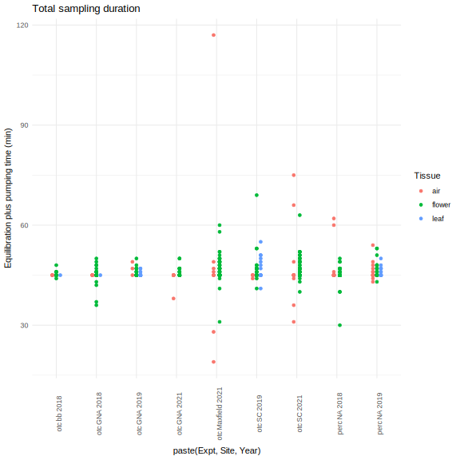
OTC actual temperature
ggplot(meta %>% filter(Expt=="otc", temp !="air", Site != "bb"),
aes(y=mean_temp_C_treatment, x=paste(Year, Site, temp), color=temp)) +
facet_grid(cols=vars(DN), scales="free_x", space="free_x")+
geom_boxplot(outlier.shape=NA)+ geom_point(alpha=0.2)+
geom_path(aes(group=paste(Year, Site, Pump_datehour)), color="black", alpha=0.3)+
theme_minimal() + theme(axis.text.x=element_text(angle=90)) +
scale_color_brewer(palette = "Set1", direction=-1)+
labs(y="Mean hourly temperature (\u00B0C)", x=("Year, site"), color="Temperature")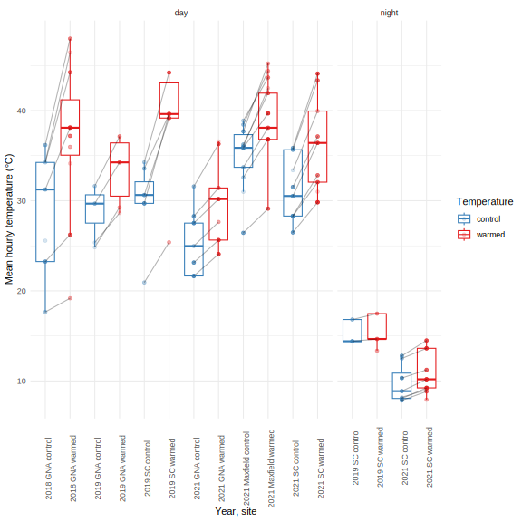
ggplot(meta %>% filter(Expt=="otc", temp !="air", Site != "bb"),
aes(y=mean_temp_C_warmed, x=mean_temp_C_control, color=DN))+
geom_abline(slope=1, intercept=0)+ geom_smooth(se=F)+
geom_text(aes(label=round(mean_temp_C_warmed-mean_temp_C_control)), alpha=0.2)+ theme_minimal() +
labs(x= "Mean temperature, controls (\u00B0C)", y="Mean temperature, warmed (\u00B0C)", color="Time")
ggplot(meta %>% filter(Expt=="otc", temp !="air", Site != "bb"),
aes(y=mean_temp_C_warmed-mean_temp_C_control, x=hour(Pump), color=DN))+
geom_point(alpha=0.1)+geom_smooth(aes(group=paste(Site, Year, DN)), se=F, method="lm")+ theme_minimal() +
labs(x= "Time of day", y="Temperature difference (\u00B0C)", color="Time")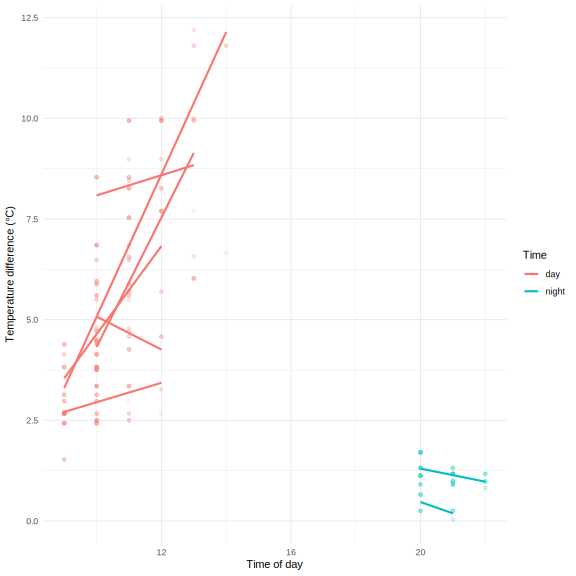
meta %>% filter(Expt=="otc", temp !="air", Site != "bb") %>%
mutate(mean_temp_C_diff = mean_temp_C_warmed-mean_temp_C_control) %>%
group_by(DN) %>% summarize(mean_temp_C_diff.SD = sd(mean_temp_C_diff, na.rm=T),
mean_temp_C_diff = mean(mean_temp_C_diff, na.rm=T)) %>%
kable(caption="temp difference during sampling")| DN | mean_temp_C_diff.SD | mean_temp_C_diff |
|---|---|---|
| day | 2.5117706 | 5.307497 |
| night | 0.4110246 | 1.040040 |
ggplot(meta %>% filter(Expt=="otc", temp !="air", Site != "bb"),
aes(y=mean_temp_C_warmed-mean_temp_C_control, x=mean_temp_C_control, color=DN))+
geom_point(alpha=0.1)+geom_smooth(aes(group=paste(Site, Year, DN)), se=F, method="lm")+ theme_minimal() +
labs(x= "Mean temperature, controls (\u00B0C)", y="Temperature difference (\u00B0C)", color="Time")
ggplot(meta %>% filter(Expt=="otc", temp !="air", Site != "bb"),
aes(x=hour(Pump), y=mean_temp_C_control, color=DN))+
geom_point(alpha=0.1)+geom_smooth(aes(group=paste(Site, Year, DN)), se=F, method="lm")+ theme_minimal() +
scale_x_continuous(n.breaks=20) +
labs(x= "Time of day", y="Temperature in controls (\u00B0C)", color="Time")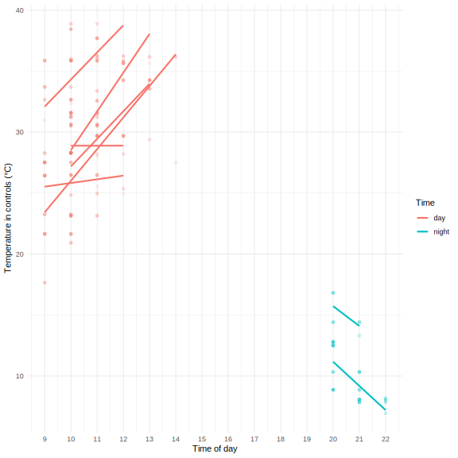
Filtering criteria
Flowers
sv <- meta %>% drop_na(Filename)
#ipo.gc <- ipo.all[sv$Filename,]
library(bouquet)
ipo.data.cut <- ipo.data[ipo.data$Filename %in% sv$Filename,]
ipo.data.cut$Filename <- sv$Filename[match(ipo.data.cut$Filename, sv$Filename)]
ipo.data.cut <- ipo.data.cut[ipo.data.cut$Name != "", ] #drop unidentified peaks
ipo.data.cut$Name <- droplevels(ipo.data.cut$Name)
longdata <- load_longdata(ipo.data.cut, sample="Filename", RT="Ret.Time", name="Name", area="Area", match = "SI", maxmatch=100)
metadata <- sv %>% as.data.frame() %>% #tibbles break bouquet's add_count_freqs
mutate(Tissue = fct_recode(Tissue, ambient="air", floral="flower", leaf="leaf"),
PlantType = factor(if_else(Tissue=="leaf",paste0(PlantType,Tissue), as.character(PlantType)))) %>%
load_metadata(date="Date", sample="Filename", group="PlantType", type="Tissue")
vol.all <- make_sampletable(longdata, metadata)
chems <- make_chemtable(longdata, metadata)
### Flower filtering
chemsf <- chems %>%
filter_RT(2, 17) %>%
filter_match(0.8) %>%
filter_freq(0.1, group = TRUE) %>% #now filter separately for each species
filter_contaminant(cont.list = c("Hexyl chloroformate", "Disulfide, di-tert-dodecyl",
"2,2,4-Trimethyl-1,3-pentanediol diisobutyrate")) %>%
filter_area(min_maximum = 1e6) %>%
filter_ambient_ratio(vol.all, metadata, ratio = 3) %>%
combine_filters()
chemsf$filter_final <- with(chemsf, filter_RT == "OK" & filter_match =="OK" &
(filter_freq.agg == "OK" | filter_freq.ten =="OK") &
filter_area == "OK" & filter_contaminant == "OK")
bouquet::plot_filters(chemsf, option="rarity", yrange=3.5)
#now run t-tests after rarity filtering
#don't filter by ambient ratio first, see paper on problems: https://doi.org/10.1186/1471-2105-11-450
chemsf <- bind_rows(chemsf %>% filter(filter_final) %>%
filter_ambient_ttest(prune_sampletable(vol.all, chemsf, metadata),
metadata, alpha = 0.05, adjust = "fdr"),
chemsf %>% filter(!filter_final)) %>%
mutate(filter_ambient_ttest=fct_na_value_to_level(filter_ambient_ttest, "notchecked"),
filter_final = filter_final & filter_ambient_ratio =="OK") %>%
arrange(match(name, colnames(vol.all)))
bouquet::plot_filters(chemsf, option="ambient", yrange=2.5)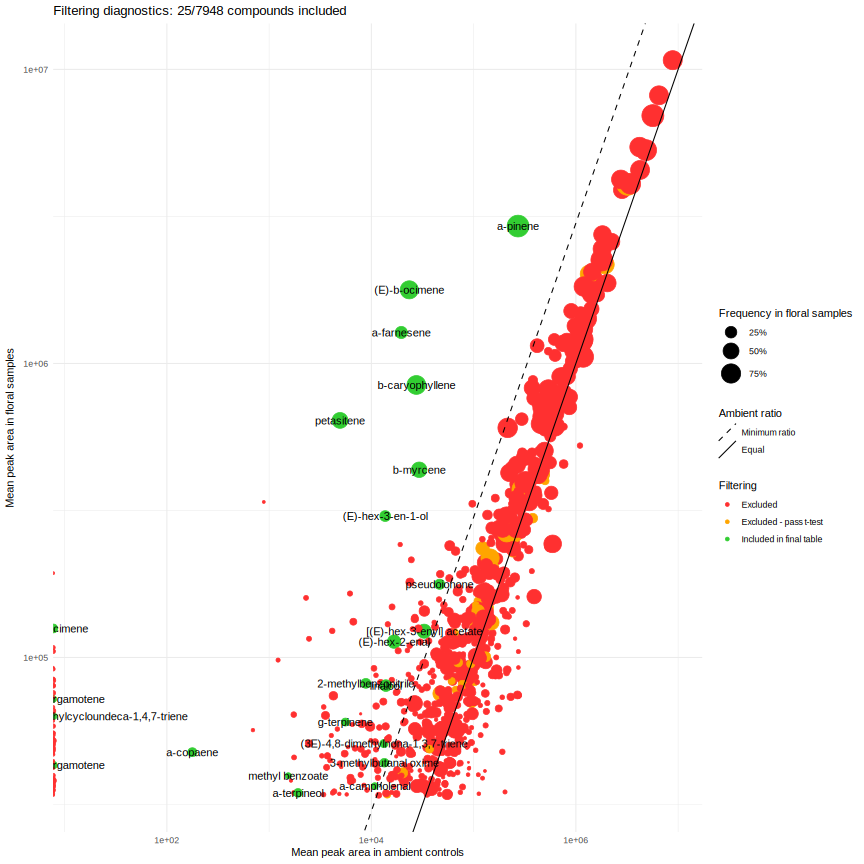
bouquet::plot_filters(chemsf, option="volcano", yrange=2.5, alpha_excluded = 0.5)
bouquet::plot_filters(chemsf, option="prop")
Leaves
### Leaf filtering
meta.leaf <- metadata %>% mutate(type = fct_recode(type, floral = "leaf", flower = "floral")) #trick bouquet to think the leaf samples are floral TODO: hacky!
chems.leaf <- make_chemtable(longdata, meta.leaf)
chemsf.leaf <- chems.leaf %>%
filter_RT(2, 17) %>%
filter_match(0.8) %>%
filter_freq(0.2, group = TRUE) %>% #now filter separately for each species
filter_contaminant(cont.list = c("Hexyl chloroformate","Acetic acid, trifluoro-, undecyl ester")) %>%
filter_area(min_maximum = 5e5) %>%
filter_ambient_ratio(vol.all, meta.leaf, ratio = 4) %>%
combine_filters()
chemsf.leaf$filter_final <- with(chemsf.leaf, filter_RT == "OK" & filter_match =="OK" &
(filter_freq.aggleaf == "OK" | filter_freq.tenleaf =="OK") &
filter_area == "OK" &
filter_contaminant == "OK")
#TODO bouquet needs to do a one-sided t-test! some compounds lower in blanks got a pass with low p value!
bouquet::plot_filters(chemsf.leaf, option="rarity")chemsf.leaf <- bind_rows(chemsf.leaf %>% filter(filter_final) %>%
filter_ambient_ttest(prune_sampletable(vol.all, chemsf.leaf, metadata),
metadata, alpha = 0.05, adjust = "fdr"),
chemsf.leaf %>% filter(!filter_final)) %>%
mutate(filter_ambient_ttest=fct_na_value_to_level(filter_ambient_ttest, "notchecked"),
filter_final = filter_final & filter_ambient_ratio =="OK") %>%
arrange(match(name, colnames(vol.all)))
bouquet::plot_filters(chemsf.leaf, option="ambient", yrange=2.5)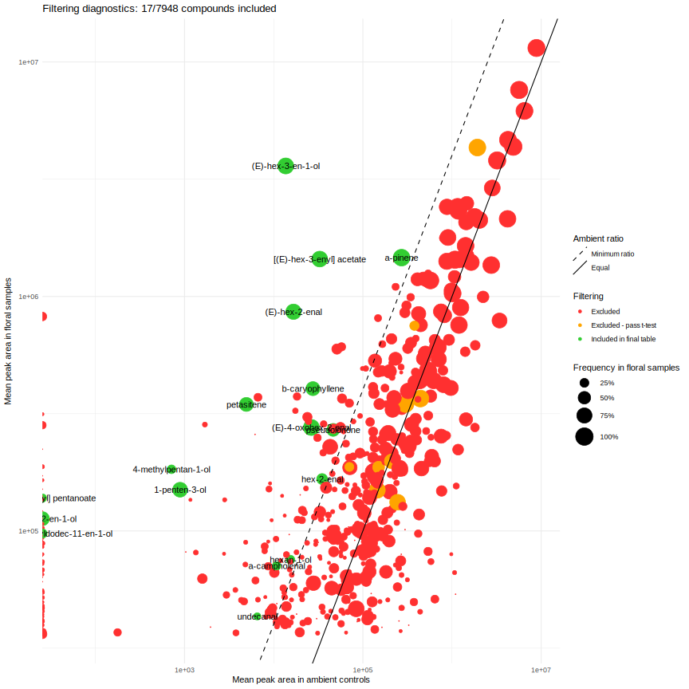
bouquet::plot_filters(chemsf.leaf, option="volcano", yrange=2, alpha_excluded = 0.5)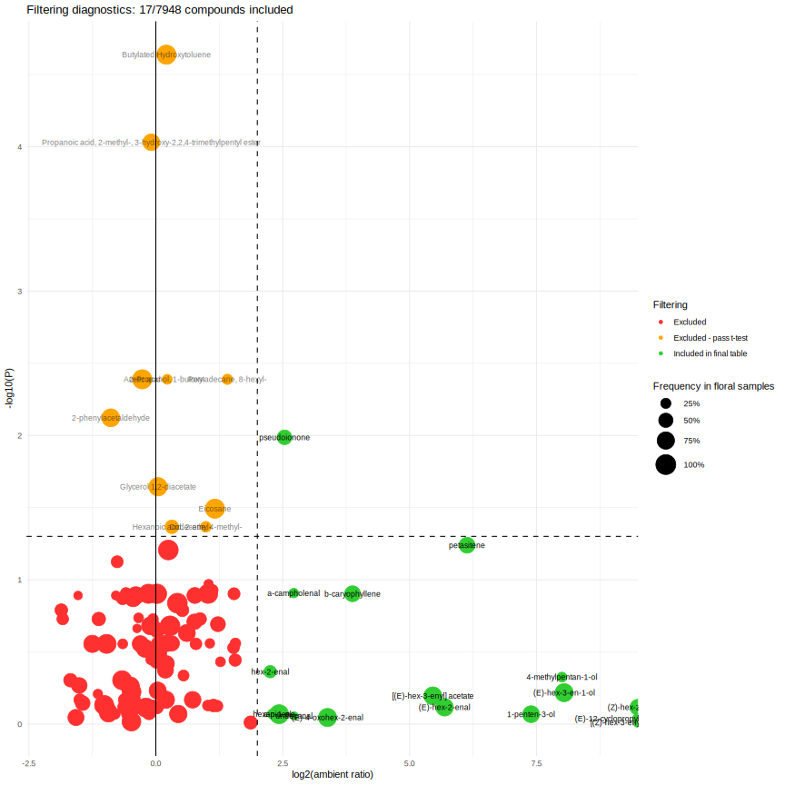
bouquet::plot_filters(chemsf.leaf, option="prop")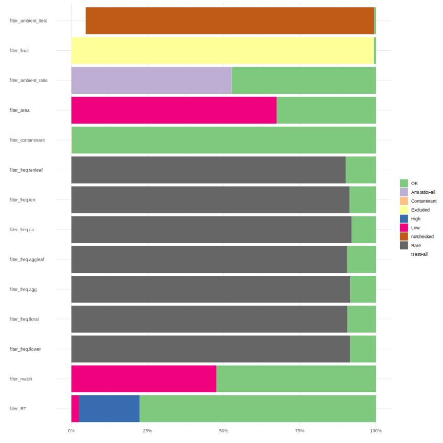
#compare amounts in floral vs. leaf samples
chemsf <- chemsf %>% mutate(filter_ambient_leaf_ratio = chemsf.leaf$filter_ambient_ratio,
filter_ambient_leaf_ttest = chemsf.leaf$filter_ambient_ttest,
leaf_not_flower = filter_ambient_leaf_ratio=="OK" & filter_ambient_leaf_ttest=="OK" &
!(filter_ambient_ratio=="OK" & filter_ambient_ttest=="OK"))
kept_either <- chemsf$filter_final | chemsf.leaf$filter_final
ggplot(chemsf[kept_either,], aes(x=mean.floral, y= chemsf.leaf[kept_either,"mean.floral"], label=name, color=paste(filter_final,chemsf.leaf[kept_either,"filter_final"], sep=", ")))+ theme_minimal()+
geom_abline(slope=1, intercept=1) + geom_point(aes(size=RT), alpha=0.3)+ geom_text()+
scale_x_log10()+ scale_y_log10() + coord_fixed()+
scale_color_manual(labels=c("leaf","floral","both"),values=c("darkgreen","red","blue"))+
labs(x="Mean area in flowers", y= "Mean area in leaves", color="Kept in dataset")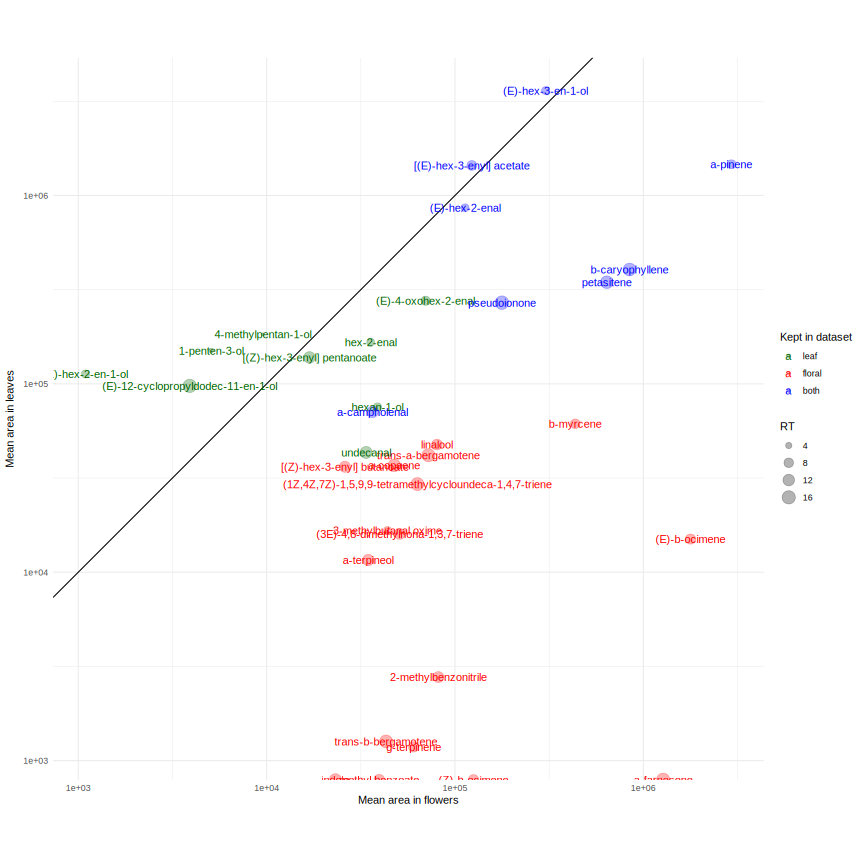
vol <- prune_sampletable(vol.all, chemsf, metadata)
vol.leaf <- prune_sampletable(vol.all, chemsf.leaf, meta.leaf)
colnames(vol)[!colnames(vol) %in% shortnames]character(0)files_exclude <- c("T196DAug16_09012018.qgd", "A188DAug16_09012018.qgd", "OTC_Z3_190805_8102019_24.qgd", "T139_day_190725_862019_06.qgd", "GNA_17_210716_7202021_18.qgd","Maxfield_27_210723_822021_03.qgd", #no filtered volatiles
"SC_91_210715_8202021_10.qgd") #Artemisia leaves
files_exclude_leaf <- c("CWH1LeafJuly27_09022018.qgd","NatArea69leafrenamedJuly25_08312018.qgd", #lack leaf mass
"T164_leaf_190731_882019_18.qgd","OTC_Z2_leaf_190805_8102019_23.qgd") #no filtered volatiles
svf <- metadata[metadata$type == "floral" & !(metadata$sample %in% files_exclude),]
svl <- metadata[metadata$type == "leaf" & !(metadata$sample %in% files_exclude_leaf),]
svf$Year <- factor(svf$Year)
svf <- svf %>% mutate_if(is.factor, droplevels) %>%
mutate(Treat = paste(temp, Temp) %>%
fct_collapse(control=c("control NA","NA cool"),warmed=c("NA warm","warmed NA")))
svl <- svl %>% mutate_if(is.factor, droplevels) %>%
mutate(Treat = paste(temp, Temp) %>%
fct_collapse(control=c("control NA","NA cool"),warmed=c("NA warm","warmed NA")))
vol <- vol[!(rownames(vol) %in% files_exclude) ,]
vol.leaf <- vol.leaf[!(rownames(vol.leaf) %in% files_exclude_leaf) ,]
vol <- vol / as.numeric(svf$Total, units="hours") / svf$NumFlrs #30 min of equilibration plus 15 minpumping, one flower
vol.leaf <- vol.leaf / as.numeric(svl$Total, units="hours") / svl$LeafDryWtGrams #area per hour per dry gram leaf# convert peak areas to nanograms using standards run in each year
ipochemsf <- ipochems[match(colnames(vol), ipochems$shortname),]
for(yr in levels(svf$Year)) {
thisyr <- svf$Year==yr
vol[thisyr,] <- sweep(vol[thisyr,], 2, pull(ipochemsf, paste0("area_per_ng",yr)), FUN = '/')
}
svf$Total <- rowSums(vol)
ipochemsl <- ipochems[match(colnames(vol.leaf), ipochems$shortname),]
vol.leaf <- sweep(vol.leaf, 2, ipochemsl$area_per_ng2019, FUN = '/')
svl$Total <- rowSums(vol.leaf)Ambient heatmap and NMDS
vol.pruned <- vol.all[,chemsf$filter_final]
metadata$zeroSum <- rowSums(vol.pruned)==0
vol.pruned <- vol.pruned[!metadata$zeroSum,]
ph <- pheatmap(as.matrix(t(vol.pruned))^(1/3),
cluster_cols=T, show_colnames=F,
clustering_method="mcquitty", clustering_distance_rows="correlation",
clustering_distance_cols=vegdist(vol.pruned, method = "bray"),
clustering_callback = function(hc, ...){dendsort(hc, type="average")},
scale="none", color=inferno(512),
annotation_col = data.frame(metadata %>% filter(!zeroSum) %>% select("Year", "PlantType", "expt", "temp","DN","Site"), row.names=rownames(vol.pruned)),
fontsize = 10, border_color = NA, legend=F, annotation_legend=T, cutree_rows=6
)
set.seed(1)
nmds.vol <- metaMDS(sqrt(vol.pruned), dist="bray", autotransform = FALSE, trace=F, trymax=3)
ordiplot(nmds.vol, type = "n")
text(nmds.vol, display="species", cex=0.7, col="grey20")
points(nmds.vol, display="sites", col=metadata$type, pch=as.integer(factor(metadata$Year)))
All filtered samples
Flower heatmap
#cairo_pdf("ipo_heatmap.pdf", width=12, height=12)
ph <- pheatmap(as.matrix(t(vol))^(1/3),
cluster_cols=T, show_colnames=F,
clustering_method="mcquitty", clustering_distance_rows="correlation",
clustering_distance_cols=vegdist(vol, method = "bray"),
clustering_callback = function(hc, ...){dendsort(hc, type="average")},
scale="none", color=inferno(512),
annotation_col = data.frame(svf %>% select("Year", "PlantType", "expt", "Treat","DN","Site"), row.names=rownames(vol)),
fontsize = 10, border_color = NA, legend=F, annotation_legend=T, cutree_rows=6
)
#dev.off()Flower NMDS
set.seed(1)
nmds.vol <- metaMDS(sqrt(vol), dist="bray", autotransform = FALSE, trace=F)
TEY <- with(svf, factor(paste(PlantType,expt,Year)))
TEYcols <- brewer.pal(9, "Paired")#[c(1:4,8,5:6)]
spcols <- c(agg="red", ten="violet")
ordiplot(nmds.vol, type = "n")
text(nmds.vol, display="species", cex=0.7, col="grey20")
legend("topleft", levels(svf$DN), pch=c(1,4))
#legend("topright", levels(svf$PlantType), fill=spcols)
legend("bottomright", levels(svf$Year), fill=1:3)
#legend("bottomleft", levels(TEY), fill=TEYcols, cex=0.9)
#points(nmds.vol, display="sites", col=TEYcols[TEY], pch=c(13,19)[svf$DN])
#points(nmds.vol, display="sites", col=spcols[svf$PlantType], pch=c(13,19)[svf$DN])
points(nmds.vol, display="sites", col=svf$Year, pch=c(1,4)[svf$DN])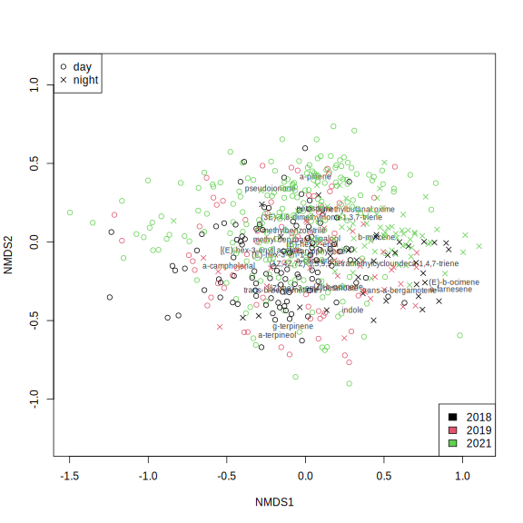
#points(nmds.vol, display="sites", col=viridis(100)[sqrt(rowSums(vol))/100], pch=19)OTCs vs.Ambient
Inventory
svf %>% filter(expt=="otc") %>% count(PlantType, DN, temp,Year, Site, is.na(mean_temp_C_treatment)) %>%
pivot_wider(names_from=temp, values_from=n) %>% kable(caption="Sample size")| PlantType | DN | Year | Site | is.na(mean_temp_C_treatment) | control | warmed |
|---|---|---|---|---|---|---|
| agg | day | 2018 | GNA | FALSE | 16 | 30 |
| agg | day | 2018 | bb | TRUE | 13 | 13 |
| agg | day | 2019 | GNA | FALSE | 7 | 8 |
| agg | day | 2019 | GNA | TRUE | 3 | 4 |
| agg | day | 2021 | GNA | FALSE | 26 | 32 |
| agg | day | 2021 | Maxfield | FALSE | 38 | 43 |
| ten | day | 2019 | SC | FALSE | 10 | 11 |
| ten | day | 2021 | SC | FALSE | 30 | 42 |
| ten | night | 2019 | SC | FALSE | 8 | 9 |
| ten | night | 2021 | SC | FALSE | 28 | 39 |
samplesperplant <- svf %>% filter(Expt=="otc") %>% count(PlantType, DN, temp, Year, Site, PlantID)
samplesperplant %>% count(PlantType, DN, Year, Site, temp) %>% pivot_wider(names_from=temp, values_from=n) %>% kable(caption="Number of plants")| PlantType | DN | Year | Site | control | warmed |
|---|---|---|---|---|---|
| agg | day | 2018 | GNA | 16 | 28 |
| agg | day | 2018 | bb | 13 | 13 |
| agg | day | 2019 | GNA | 10 | 11 |
| agg | day | 2021 | GNA | 18 | 18 |
| agg | day | 2021 | Maxfield | 26 | 27 |
| ten | day | 2019 | SC | 10 | 11 |
| ten | day | 2021 | SC | 16 | 24 |
| ten | night | 2019 | SC | 8 | 9 |
| ten | night | 2021 | SC | 16 | 25 |
samplesperplant %>% count(PlantType, DN, Year, Site, n) %>% kable(caption="Sample size per plant")| PlantType | DN | Year | Site | n | nn |
|---|---|---|---|---|---|
| agg | day | 2018 | GNA | 1 | 42 |
| agg | day | 2018 | GNA | 2 | 2 |
| agg | day | 2018 | bb | 1 | 26 |
| agg | day | 2019 | GNA | 1 | 20 |
| agg | day | 2019 | GNA | 2 | 1 |
| agg | day | 2021 | GNA | 1 | 16 |
| agg | day | 2021 | GNA | 2 | 18 |
| agg | day | 2021 | GNA | 3 | 2 |
| agg | day | 2021 | Maxfield | 1 | 27 |
| agg | day | 2021 | Maxfield | 2 | 24 |
| agg | day | 2021 | Maxfield | 3 | 2 |
| ten | day | 2019 | SC | 1 | 21 |
| ten | day | 2021 | SC | 1 | 10 |
| ten | day | 2021 | SC | 2 | 28 |
| ten | day | 2021 | SC | 3 | 2 |
| ten | night | 2019 | SC | 1 | 17 |
| ten | night | 2021 | SC | 1 | 19 |
| ten | night | 2021 | SC | 2 | 18 |
| ten | night | 2021 | SC | 3 | 4 |
samplesperplant %>% ggplot(aes(x=n, fill=Site)) + facet_grid(Site ~ Year) + geom_histogram(binwidth=1) +
stat_bin(aes(label=stat(count)), y=3, geom="text", binwidth=1) + guides(fill="none") + theme_minimal()
ggplot(svf %>% filter(Expt=="otc") %>% mutate(site=paste(Site,DN))) + facet_wrap(vars(Year), ncol=1)+
geom_bar(aes(x=yday(date), color=site, fill=site)) +
geom_vline(data=read_csv("./data/CWu OTC Hobos - duration.csv") %>%
mutate(begin=OTC_start-days(1), end=OTC_end+days(1), #start/end were trimmed 1 day for hobos
Year=year, site=paste(site,"day"), .keep="unused"),
aes(xintercept=yday(begin), color=site), size=1, linetype=2)+
theme_minimal() + labs(x="Day of year", y="Number of floral volatile samples", color="Site", fill="Site")plot.otc <- function(svf.otc, cap.terms=c("mean_temp_C_treatment", "temp"), plot.chems=T) {
vol.otc <- vol[svf.otc$sample,]
cap.formula <- reformulate(cap.terms, response = "sqrt(vol.otc)")
cap.otc <- capscale(cap.formula, distance="bray", data=svf.otc)
summ.cap <- summary(cap.otc)
prop.expl <- summ.cap$cont$importance
ax.labs <- paste0(colnames(prop.expl)[1:2], " (",round(100*prop.expl[2,1:2]),"% explained)")
cap.terms.int <- str_subset(cap.terms, ":")
anova.cap <- anova(cap.otc, by=ifelse(length(cap.terms.int)>0, "term", "margin"))
plot(cap.otc, type="n", xlim=range(cap.otc$CCA$wa[,1]), xlab=ax.labs[1], ylab=ax.labs[2])
with(svf.otc,
title(main=paste("OTC warming:","I.",unique(PlantType), "at", paste(unique(Site), collapse=" & "),unique(Year),
do.call(paste0, list(unique(DN), collapse="/")), "n =",nrow(svf.otc))))
if("temp" %in% cap.terms) legend("topleft", title=paste("Treatment","\nP =",anova.cap["temp","Pr(>F)"]),
levels(svf.otc$temp), fill=tempcol)
if("DN" %in% cap.terms) legend("topright", title=paste("Time","\nP =",anova.cap["DN","Pr(>F)"]),
levels(svf.otc$DN), pch=c(1,19))
if(length(cap.terms.int)>0) legend("bottomleft", title= paste("Interaction\nP =", anova.cap[cap.terms.int,"Pr(>F)"]), legend="")
temprange <- round(c(max(svf.otc$mean_temp_C_treatment), min(svf.otc$mean_temp_C_treatment)))
if("mean_temp_C_treatment" %in% cap.terms) legend("bottomleft",
title=paste("Temperature","\nP =",anova.cap["mean_temp_C_treatment","Pr(>F)"]),
paste(temprange, " C"), fill=rev(viridis(2)))
if("Site" %in% cap.terms) legend("bottomright", title=paste("Site","\nP =",anova.cap["Site","Pr(>F)"]),
unique(svf.otc$Site))
ordispider(cap.otc, with(svf.otc, paste(Year, Site, temp, PlantID)), col="grey80")
points(cap.otc, display="sites", col=c(tempcol)[svf.otc$temp], pch=c(1,19)[svf.otc$DN])
text(cap.otc, display="cn")
if(plot.chems) {
if(length(cap.terms)>1) text(cap.otc, display="species", cex=0.8, srt=45,
col=ifelse(sqrt(cap.otc$CCA$v[,1]^2 + cap.otc$CCA$v[,2]^2)>0.25, alpha("purple",1),alpha("purple",0)))
else text(cap.otc, display="species", cex=0.8, srt=45,
col=ifelse(abs(cap.otc$CCA$v[,1])>0.1, alpha("purple",1),alpha("purple",0)))
}
return(cap.otc)
}
plot.terms <-c("mean_temp_C_treatment", "temp")CAP of I. aggregata
Each year and site
cap.siteyr.agg <- svf %>% filter(expt=="otc", PlantType=="agg") %>%
drop_na(mean_temp_C_treatment) %>%
group_by(Site, Year) %>% summarize(meta = list(cur_data_all()), .groups = "drop") %>%
arrange(Site, Year) %>% #nest that keeps groups
mutate(samples = map_int(meta, nrow),
cap = map(meta, plot.otc),
anova = map(cap, ~tidy(anova(.x, by="margin")))) 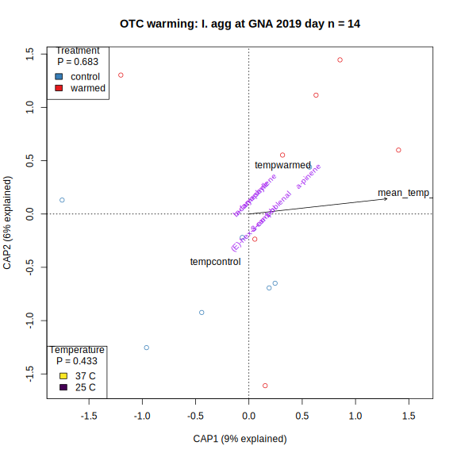
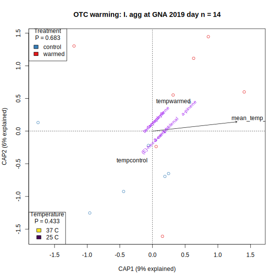 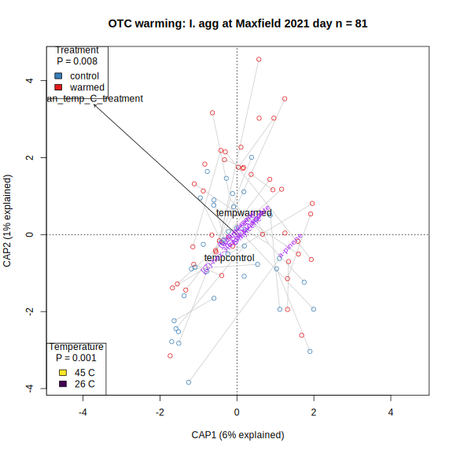
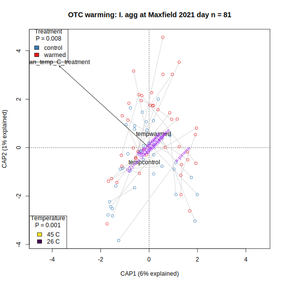
cap.siteyr.agg %>% select(-c(meta,cap)) %>% unnest(anova) %>%
filter(term!="Residual") %>% select(-c(df, SumOfSqs,statistic)) %>%
pivot_wider(names_from=term, values_from=p.value) %>%
rename(N=samples, Temperature=mean_temp_C_treatment, Treatment=temp) %>%
kable(caption="I. aggregata site-year CAP p-values")| Site | Year | N | Temperature | Treatment |
|---|---|---|---|---|
| GNA | 2018 | 46 | 0.001 | 0.275 |
| GNA | 2019 | 15 | 0.339 | 0.410 |
| GNA | 2021 | 58 | 0.062 | 0.126 |
| Maxfield | 2021 | 81 | 0.001 | 0.003 |
2021 both sites
cap.yr.agg <- svf %>% filter(expt=="otc", PlantType=="agg", year == "2021") %>%
drop_na(mean_temp_C_treatment) %>%
group_by(Year) %>% summarize(meta = list(cur_data_all()), .groups = "drop") %>%
mutate(samples = map_int(meta, nrow),
cap = map(meta, plot.otc, cap.terms=c(plot.terms, "Site")),
anova = map(cap, ~tidy(anova(.x, by="margin"))))
cap.yr.agg %>% select(-c(meta,cap)) %>% unnest(anova) %>%
filter(term!="Residual") %>% select(-c(df, SumOfSqs,statistic)) %>%
pivot_wider(names_from=term, values_from=p.value) %>%
rename(N=samples, Temperature=mean_temp_C_treatment, Treatment=temp) %>%
kable(caption="I. aggregata year CAP p-values")| Year | N | Temperature | Treatment | Site |
|---|---|---|---|---|
| 2021 | 139 | 0.141 | 0.021 | 0.071 |
All years
svf.otc <- svf %>% filter(expt=="otc", PlantType=="agg", Site!="bb") %>% drop_na(mean_temp_C_treatment)
vol.otc <- vol[svf.otc$sample,]
(cap.otc.comb <- capscale(sqrt(vol.otc) ~ Year + Site + Site*mean_temp_C_treatment + Year*mean_temp_C_treatment + temp, distance="bray", data=svf.otc))Call: capscale(formula = sqrt(vol.otc) ~ Year + Site + Site *
mean_temp_C_treatment + Year * mean_temp_C_treatment + temp, data =
svf.otc, distance = "bray")
Inertia Proportion Rank
Total 44.4385 1.0000
Constrained 7.7755 0.1750 8
Unconstrained 49.6430 1.1171 68
Imaginary -12.9800 -0.2921 131
Inertia is squared Bray distance
Species scores projected from 'sqrt' 'vol.otc'
Eigenvalues for constrained axes:
CAP1 CAP2 CAP3 CAP4 CAP5 CAP6 CAP7 CAP8
4.138 1.434 0.852 0.420 0.360 0.224 0.176 0.171
Eigenvalues for unconstrained axes:
MDS1 MDS2 MDS3 MDS4 MDS5 MDS6 MDS7 MDS8
7.619 4.755 4.091 3.433 2.575 2.335 2.092 1.944
(Showing 8 of 68 unconstrained eigenvalues)(anova.cap <- anova(cap.otc.comb, by="term"))Permutation test for capscale under reduced model
Terms added sequentially (first to last)
Permutation: free
Number of permutations: 999
Model: capscale(formula = sqrt(vol.otc) ~ Year + Site + Site * mean_temp_C_treatment + Year * mean_temp_C_treatment + temp, data = svf.otc, distance = "bray")
Df SumOfSqs F Pr(>F)
Year 2 4.582 8.8151 0.001 ***
Site 1 0.907 3.4913 0.001 ***
mean_temp_C_treatment 1 0.719 2.7662 0.001 ***
temp 1 0.501 1.9272 0.022 *
Site:mean_temp_C_treatment 1 0.482 1.8545 0.028 *
Year:mean_temp_C_treatment 2 0.584 1.1233 0.270
Residual 191 49.643
---
Signif. codes: 0 '***' 0.001 '**' 0.01 '*' 0.05 '.' 0.1 ' ' 1summ.cap <- summary(cap.otc.comb)
prop.expl <- summ.cap$cont$importance
ax.labs <- paste0(colnames(prop.expl)[1:2], " (",round(100*prop.expl[2,1:2]),"% explained)")
yearpch <- c(`2018`=15,`2019`=19,`2021`=17)
plot(cap.otc.comb, type="n", xlab=ax.labs[1], ylab=ax.labs[2])
title(paste("OTC warming: I. agg at all sites, all years", "n =", nrow(svf.otc)))
temprange <- round(c(max(svf.otc$mean_temp_C_treatment), min(svf.otc$mean_temp_C_treatment)))
legend("topleft", title=paste("Temperature","\nP =",anova.cap["mean_temp_C_treatment","Pr(>F)"]), legend=paste(temprange, " C"), fill=rev(viridis(2)))
legend("topright", title=paste("Year","\nP =",anova.cap["Year","Pr(>F)"]), levels(svf.otc$Year), pch=yearpch)
legend("bottomright", title=paste("Site","\nP =",anova.cap["Site","Pr(>F)"]), legend=unique(svf.otc$Site))
legend("bottomleft", title=paste("Treatment","\nP =",anova.cap["temp","Pr(>F)"]), levels(svf.otc$temp))
ordispider(cap.otc.comb, with(svf.otc, paste(Year, Site, temp, PlantID)), col="grey80")
points(cap.otc.comb, display="sites", col=inferno(round(temprange[1]-temprange[2]))[round(svf.otc$mean_temp_C_treatment-temprange[2])+1], pch=yearpch[svf.otc$Year])
text(cap.otc.comb, display="cn")
text(cap.otc.comb, display="species", cex=0.7, srt=45,
col=ifelse(sqrt(cap.otc.comb$CCA$v[,1]^2 + cap.otc.comb$CCA$v[,2]^2)>0.25, alpha("purple",0.7),alpha("purple",0)))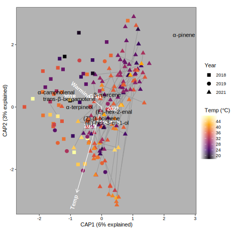
lmer(sqrt(Total) ~ Year + Site + temp + (1|PlantID), data = svf.otc) %>% anova %>% kable(caption="total emissions")| Sum Sq | Mean Sq | NumDF | DenDF | F value | Pr(>F) | |
|---|---|---|---|---|---|---|
| Year | 762.76744 | 381.38372 | 2 | 177.8899 | 11.3760516 | 0.0000224 |
| Site | 12.47178 | 12.47178 | 1 | 134.0008 | 0.3720129 | 0.5429420 |
| temp | 33.75707 | 33.75707 | 1 | 157.3793 | 1.0069182 | 0.3171826 |
CAP of I. tenuituba
Each year
cap.yr.ten <- svf %>% filter(expt=="otc", PlantType=="ten") %>%
group_by(Year) %>% summarize(meta = list(cur_data_all()), .groups = "drop") %>%
mutate(samples = map_int(meta, nrow),
cap = map(meta, plot.otc, cap.terms=c("DN","temp","DN:temp")),
anova = map(cap, ~tidy(anova(.x, by="term"))))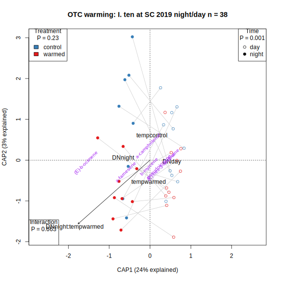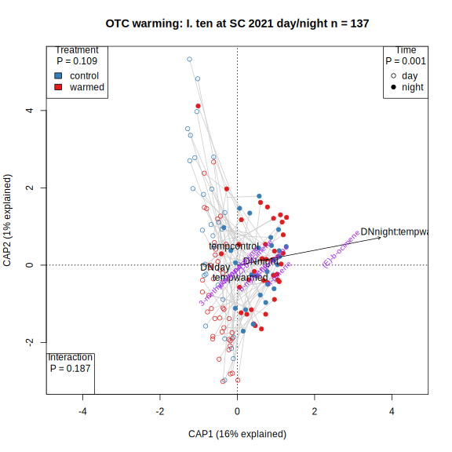
cap.yr.ten %>% select(-c(meta,cap)) %>% unnest(anova) %>%
filter(term!="Residual") %>% select(-c(df, SumOfSqs,statistic)) %>%
pivot_wider(names_from=term, values_from=p.value) %>%
rename(N=samples, Time=DN, Treatment=temp, "Time:Treatment"="DN:temp") %>%
kable(caption="I. tenuituba year CAP p-values")| Year | N | Time | Treatment | Time:Treatment |
|---|---|---|---|---|
| 2019 | 38 | 0.315 | 0.548 | 0.001 |
| 2021 | 139 | 0.001 | 0.433 | 0.858 |
Both years, day
svf.otc <- svf %>% filter(expt=="otc", PlantType=="ten", DN=="day") %>% drop_na(mean_temp_C_treatment)
vol.otc <- vol[svf.otc$sample,]
(cap.otc.comb <- capscale(sqrt(vol.otc) ~ Year*mean_temp_C_treatment + temp, distance="bray", data=svf.otc))Call: capscale(formula = sqrt(vol.otc) ~ Year * mean_temp_C_treatment +
temp, data = svf.otc, distance = "bray")
Inertia Proportion Rank
Total 18.04587 1.00000
Constrained 1.56719 0.08684 4
Unconstrained 20.54906 1.13871 40
Imaginary -4.07037 -0.22556 50
Inertia is squared Bray distance
Species scores projected from 'sqrt' 'vol.otc'
Eigenvalues for constrained axes:
CAP1 CAP2 CAP3 CAP4
0.7511 0.4997 0.1677 0.1487
Eigenvalues for unconstrained axes:
MDS1 MDS2 MDS3 MDS4 MDS5 MDS6 MDS7 MDS8
3.772 3.000 1.682 1.542 1.169 1.075 0.999 0.862
(Showing 8 of 40 unconstrained eigenvalues)(anova.cap <- anova(cap.otc.comb, by="term"))Permutation test for capscale under reduced model
Terms added sequentially (first to last)
Permutation: free
Number of permutations: 999
Model: capscale(formula = sqrt(vol.otc) ~ Year * mean_temp_C_treatment + temp, data = svf.otc, distance = "bray")
Df SumOfSqs F Pr(>F)
Year 1 0.6216 2.6619 0.005 **
mean_temp_C_treatment 1 0.2223 0.9522 0.491
temp 1 0.1635 0.7002 0.769
Year:mean_temp_C_treatment 1 0.5598 2.3972 0.006 **
Residual 88 20.5491
---
Signif. codes: 0 '***' 0.001 '**' 0.01 '*' 0.05 '.' 0.1 ' ' 1summ.cap <- summary(cap.otc.comb)
prop.expl <- summ.cap$cont$importance
ax.labs <- paste0(colnames(prop.expl)[1:2], " (",round(100*prop.expl[2,1:2]),"% explained)")
yearpch <- c(`2018`=15,`2019`=19,`2021`=17)
plot(cap.otc.comb, type="n", xlab=ax.labs[1], ylab=ax.labs[2])
title(paste("OTC warming: I. ten, 2019/2021 day","n =", nrow(svf.otc)))
temprange <- round(c(max(svf.otc$mean_temp_C_treatment), min(svf.otc$mean_temp_C_treatment)))
legend("topleft", title=paste("Temperature","\nP =",anova.cap["mean_temp_C_treatment","Pr(>F)"]), legend=paste(temprange, " C"), fill=rev(viridis(2)))
legend("topright", title=paste("Year","\nP =",anova.cap["Year","Pr(>F)"]), legend=unique(svf.otc$Year), pch=yearpch[unique(svf.otc$Year)])
legend("left", title=paste("Treatment","\nP =",anova.cap["temp","Pr(>F)"]), levels(svf.otc$temp))
ordispider(cap.otc.comb, with(svf.otc, paste(Year, Site, temp, PlantID)), col="grey80")
points(cap.otc.comb, display="sites", col=inferno(round(temprange[1]-temprange[2]))[round(svf.otc$mean_temp_C_treatment-temprange[2])+1], pch=yearpch[svf.otc$Year])
text(cap.otc.comb, display="cn")
text(cap.otc.comb, display="species", cex=0.7, srt=45,
col=ifelse(sqrt(cap.otc.comb$CCA$v[,1]^2 + cap.otc.comb$CCA$v[,2]^2)>0.25, alpha("purple",0.7),alpha("purple",0)))
lmer(sqrt(Total) ~ Year + temp + (1|PlantID), data = svf.otc) %>% anova %>% kable(caption="total emissions")| Sum Sq | Mean Sq | NumDF | DenDF | F value | Pr(>F) | |
|---|---|---|---|---|---|---|
| Year | 12.52674 | 12.52674 | 1 | 90 | 0.3463473 | 0.5576622 |
| temp | 94.79351 | 94.79351 | 1 | 90 | 2.6209118 | 0.1089631 |
Both years, night
svf.otc <- svf %>% filter(expt=="otc", PlantType=="ten", DN=="night")
vol.otc <- vol[svf.otc$sample,]
(cap.otc.comb <- capscale(sqrt(vol.otc) ~ Year*temp, distance="bray", data=svf.otc))Call: capscale(formula = sqrt(vol.otc) ~ Year * temp, data = svf.otc,
distance = "bray")
Inertia Proportion Rank
Total 12.9846 1.0000
Constrained 1.5097 0.1163 3
Unconstrained 13.7880 1.0619 38
Imaginary -2.3131 -0.1781 43
Inertia is squared Bray distance
Species scores projected from 'sqrt' 'vol.otc'
Eigenvalues for constrained axes:
CAP1 CAP2 CAP3
0.9374 0.4701 0.1023
Eigenvalues for unconstrained axes:
MDS1 MDS2 MDS3 MDS4 MDS5 MDS6 MDS7 MDS8
3.176 1.726 1.439 0.964 0.886 0.677 0.634 0.566
(Showing 8 of 38 unconstrained eigenvalues)(anova.cap <- anova(cap.otc.comb, by="term"))Permutation test for capscale under reduced model
Terms added sequentially (first to last)
Permutation: free
Number of permutations: 999
Model: capscale(formula = sqrt(vol.otc) ~ Year * temp, data = svf.otc, distance = "bray")
Df SumOfSqs F Pr(>F)
Year 1 0.9144 5.3053 0.001 ***
temp 1 0.2728 1.5829 0.089 .
Year:temp 1 0.3225 1.8715 0.060 .
Residual 80 13.7880
---
Signif. codes: 0 '***' 0.001 '**' 0.01 '*' 0.05 '.' 0.1 ' ' 1summ.cap <- summary(cap.otc.comb)
prop.expl <- summ.cap$cont$importance
ax.labs <- paste0(colnames(prop.expl)[1:2], " (",round(100*prop.expl[2,1:2]),"% explained)")
yearpch <- c(`2018`=15,`2019`=19,`2021`=17)
plot(cap.otc.comb, type="n", xlab=ax.labs[1], ylab=ax.labs[2])
title(paste("OTC warming: I. ten, 2019/2021 night","n =", nrow(svf.otc)))
legend("topright", title=paste("Year","\nP =",anova.cap["Year","Pr(>F)"]), legend=unique(svf.otc$Year), pch=yearpch[unique(svf.otc$Year)])
legend("left", title=paste("Treatment","\nP =",anova.cap["temp","Pr(>F)"]), levels(svf.otc$temp), fill=tempcol)
ordispider(cap.otc.comb, with(svf.otc, paste(Year, Site, temp, PlantID)), col="grey80")
points(cap.otc.comb, display="sites", col=tempcol[svf.otc$temp], pch=yearpch[svf.otc$Year])
text(cap.otc.comb, display="cn")
text(cap.otc.comb, display="species", cex=0.7, srt=45,
col=ifelse(sqrt(cap.otc.comb$CCA$v[,1]^2 + cap.otc.comb$CCA$v[,2]^2)>0.25, alpha("purple",0.7),alpha("purple",0)))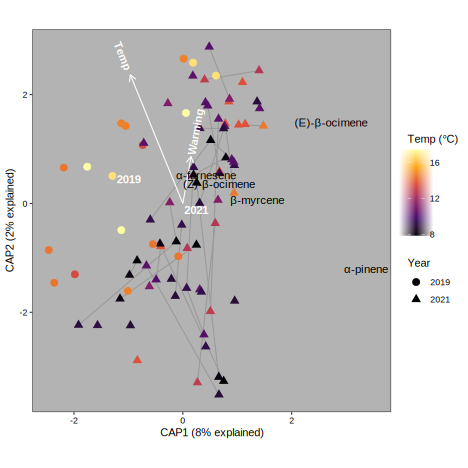
lmer(sqrt(Total) ~ Year + temp + (1|PlantID), data = svf.otc) %>% anova %>% kable(caption="total emissions")| Sum Sq | Mean Sq | NumDF | DenDF | F value | Pr(>F) | |
|---|---|---|---|---|---|---|
| Year | 463.63144 | 463.63144 | 1 | 66.60305 | 13.6609001 | 0.0004446 |
| temp | 10.24176 | 10.24176 | 1 | 55.20099 | 0.3017735 | 0.5849883 |
2021, night, VWC
svf.otc <- svf %>% filter(expt=="otc", PlantType=="ten", DN=="night") %>% drop_na(SoilVWC)
vol.otc <- vol[svf.otc$sample,]
(cap.otc.comb <- capscale(sqrt(vol.otc) ~ temp + SoilVWC, distance="bray", data=svf.otc))Call: capscale(formula = sqrt(vol.otc) ~ temp + SoilVWC, data =
svf.otc, distance = "bray")
Inertia Proportion Rank
Total 8.21863 1.00000
Constrained 0.28973 0.03525 2
Unconstrained 9.31421 1.13330 32
Imaginary -1.38531 -0.16856 30
Inertia is squared Bray distance
Species scores projected from 'sqrt' 'vol.otc'
Eigenvalues for constrained axes:
CAP1 CAP2
0.17300 0.11674
Eigenvalues for unconstrained axes:
MDS1 MDS2 MDS3 MDS4 MDS5 MDS6 MDS7 MDS8
2.4612 1.5008 1.0435 0.7390 0.6234 0.4360 0.3954 0.3223
(Showing 8 of 32 unconstrained eigenvalues)(anova.cap <- anova(cap.otc.comb, by="margin"))Permutation test for capscale under reduced model
Marginal effects of terms
Permutation: free
Number of permutations: 999
Model: capscale(formula = sqrt(vol.otc) ~ temp + SoilVWC, data = svf.otc, distance = "bray")
Df SumOfSqs F Pr(>F)
temp 1 0.1331 0.8859 0.495
SoilVWC 1 0.1654 1.1009 0.343
Residual 62 9.3142 Both species, day
svf.otc <- svf %>% filter(expt=="otc", DN=="day", Site!="bb") %>% drop_na(mean_temp_C_treatment)
vol.otc <- vol[svf.otc$sample,]
(cap.otc.comb <- capscale(sqrt(vol.otc) ~ Year + Site + mean_temp_C_treatment + temp, distance="bray", data=svf.otc))Call: capscale(formula = sqrt(vol.otc) ~ Year + Site +
mean_temp_C_treatment + temp, data = svf.otc, distance = "bray")
Inertia Proportion Rank
Total 64.8473 1.0000
Constrained 9.2160 0.1421 6
Unconstrained 77.5547 1.1960 88
Imaginary -21.9234 -0.3381 202
Inertia is squared Bray distance
Species scores projected from 'sqrt' 'vol.otc'
Eigenvalues for constrained axes:
CAP1 CAP2 CAP3 CAP4 CAP5 CAP6
4.519 1.775 1.357 1.026 0.348 0.190
Eigenvalues for unconstrained axes:
MDS1 MDS2 MDS3 MDS4 MDS5 MDS6 MDS7 MDS8
11.465 7.554 5.647 4.171 3.974 3.639 2.908 2.691
(Showing 8 of 88 unconstrained eigenvalues)(anova.cap <- anova(cap.otc.comb, by="margin"))Permutation test for capscale under reduced model
Marginal effects of terms
Permutation: free
Number of permutations: 999
Model: capscale(formula = sqrt(vol.otc) ~ Year + Site + mean_temp_C_treatment + temp, data = svf.otc, distance = "bray")
Df SumOfSqs F Pr(>F)
Year 2 3.493 6.4399 0.001 ***
Site 2 2.333 4.3021 0.001 ***
mean_temp_C_treatment 1 0.745 2.7467 0.002 **
temp 1 0.470 1.7325 0.036 *
Residual 286 77.555
---
Signif. codes: 0 '***' 0.001 '**' 0.01 '*' 0.05 '.' 0.1 ' ' 1summ.cap <- summary(cap.otc.comb)
prop.expl <- summ.cap$cont$importance
ax.labs <- paste0(colnames(prop.expl)[1:2], " (",round(100*prop.expl[2,1:2]),"% explained)")
yearpch <- c(`2018`=15,`2019`=19,`2021`=17)
plot(cap.otc.comb, type="n", xlab=ax.labs[1], ylab=ax.labs[2])
title(paste("OTC warming: I. agg & ten at all sites, all years, day","n =", nrow(svf.otc)))
temprange <- round(c(max(svf.otc$mean_temp_C_treatment), min(svf.otc$mean_temp_C_treatment)))
legend("topleft", title=paste("Temperature","\nP =",anova.cap["mean_temp_C_treatment","Pr(>F)"]), legend=paste(temprange, " C"), fill=rev(viridis(2)))
legend("topright", title=paste("Year","\nP =",anova.cap["Year","Pr(>F)"]), levels(svf.otc$Year), pch=yearpch)
legend("bottomright", title=paste("Site","\nP =",anova.cap["Site","Pr(>F)"]), legend=unique(svf.otc$Site))
legend("bottomleft", title=paste("Treatment","\nP =",anova.cap["temp","Pr(>F)"]), levels(svf.otc$temp))
ordispider(cap.otc.comb, with(svf.otc, paste(Year, Site, temp, PlantID)), col="grey80")
points(cap.otc.comb, display="sites", col=inferno(round(temprange[1]-temprange[2]))[round(svf.otc$mean_temp_C_treatment-temprange[2])+1], pch=yearpch[svf.otc$Year])
text(cap.otc.comb, display="cn")
text(cap.otc.comb, display="species", cex=0.7, srt=45,
col=ifelse(sqrt(cap.otc.comb$CCA$v[,1]^2 + cap.otc.comb$CCA$v[,2]^2)>0.25, alpha("red",0.7),alpha("red",0)))
lmer(sqrt(Total) ~ Year + Site + temp + (1|PlantID), data = svf.otc) %>% anova %>% kable(caption="total emissions")| Sum Sq | Mean Sq | NumDF | DenDF | F value | Pr(>F) | |
|---|---|---|---|---|---|---|
| Year | 714.9814 | 357.4907 | 2 | 287 | 10.363667 | 0.0000451 |
| Site | 267.9796 | 133.9898 | 2 | 287 | 3.884368 | 0.0216505 |
| temp | 103.6076 | 103.6076 | 1 | 287 | 3.003587 | 0.0841545 |
2021 both species, day, by week
svf.otc <- svf %>% filter(expt=="otc", DN=="day", Year=="2021") %>% drop_na(mean_temp_C_treatment) %>%
mutate(sampround = factor(ifelse(yday(date)>200, "4wks", "2wks")))
vol.otc <- vol[svf.otc$sample,]
(cap.otc.comb <- capscale(sqrt(vol.otc) ~ Site + sampround * temp, distance="bray", data=svf.otc))Call: capscale(formula = sqrt(vol.otc) ~ Site + sampround * temp, data
= svf.otc, distance = "bray")
Inertia Proportion Rank
Total 43.79779 1.00000
Constrained 4.11479 0.09395 5
Unconstrained 53.35960 1.21832 70
Imaginary -13.67661 -0.31227 138
Inertia is squared Bray distance
Species scores projected from 'sqrt' 'vol.otc'
Eigenvalues for constrained axes:
CAP1 CAP2 CAP3 CAP4 CAP5
2.0914 0.8563 0.6788 0.3444 0.1439
Eigenvalues for unconstrained axes:
MDS1 MDS2 MDS3 MDS4 MDS5 MDS6 MDS7 MDS8
8.051 6.736 4.281 3.629 2.673 2.169 2.065 1.893
(Showing 8 of 70 unconstrained eigenvalues)(anova.cap <- anova(cap.otc.comb, by="term"))Permutation test for capscale under reduced model
Terms added sequentially (first to last)
Permutation: free
Number of permutations: 999
Model: capscale(formula = sqrt(vol.otc) ~ Site + sampround * temp, data = svf.otc, distance = "bray")
Df SumOfSqs F Pr(>F)
Site 2 2.322 4.4608 0.001 ***
sampround 1 1.234 4.7425 0.001 ***
temp 1 0.351 1.3501 0.136
sampround:temp 1 0.207 0.7944 0.694
Residual 205 53.360
---
Signif. codes: 0 '***' 0.001 '**' 0.01 '*' 0.05 '.' 0.1 ' ' 1(cap.otc.comb <- capscale(sqrt(vol.otc) ~ Site + sampround + temp, distance="bray", data=svf.otc))Call: capscale(formula = sqrt(vol.otc) ~ Site + sampround + temp, data
= svf.otc, distance = "bray")
Inertia Proportion Rank
Total 43.79779 1.00000
Constrained 3.90802 0.08923 4
Unconstrained 53.56637 1.22304 70
Imaginary -13.67661 -0.31227 138
Inertia is squared Bray distance
Species scores projected from 'sqrt' 'vol.otc'
Eigenvalues for constrained axes:
CAP1 CAP2 CAP3 CAP4
2.0912 0.8015 0.6786 0.3367
Eigenvalues for unconstrained axes:
MDS1 MDS2 MDS3 MDS4 MDS5 MDS6 MDS7 MDS8
8.060 6.776 4.287 3.636 2.682 2.238 2.069 1.895
(Showing 8 of 70 unconstrained eigenvalues)summ.cap <- summary(cap.otc.comb)
prop.expl <- summ.cap$cont$importance
ax.labs <- paste0(colnames(prop.expl)[1:2], " (",round(100*prop.expl[2,1:2]),"% explained)")
plot(cap.otc.comb, type="n", xlab=ax.labs[1], ylab=ax.labs[2])
title(paste("OTC warming, week: I. agg & ten at all sites, 2021, day","n =", nrow(svf.otc)))
legend("bottomright", title=paste("Site","\nP =",anova.cap["Site","Pr(>F)"]), legend=unique(svf.otc$Site))
legend("bottomleft", title=paste("Treatment","\nP =",anova.cap["temp","Pr(>F)"]), levels(svf.otc$temp))
legend("topleft", title=paste("Week","\nP =",anova.cap["sampround","Pr(>F)"]), levels(svf.otc$sampround), pch=c(1,2))
ordispider(cap.otc.comb, with(svf.otc, paste(Year, Site, temp, PlantID)), col="grey80")
points(cap.otc.comb, display="sites", col=tempcol[svf.otc$temp], pch=as.integer(svf.otc$sampround))
text(cap.otc.comb, display="cn")
text(cap.otc.comb, display="species", cex=0.7, srt=45,
col=ifelse(sqrt(cap.otc.comb$CCA$v[,1]^2 + cap.otc.comb$CCA$v[,2]^2)>0.25, alpha("purple",0.7),alpha("purple",0)))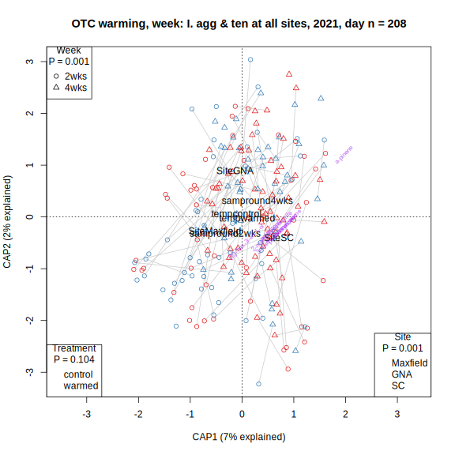
Both species, VWC+temp, day
svf %>% mutate(hasVWC=!is.na(SoilVWC+mean_temp_C_treatment)) %>% filter(Expt=="otc")%>% count(Year, Site, DN, hasVWC) %>% pivot_wider(names_from=hasVWC, values_from=n) %>% kable(caption="VOC samples with soil moisture and temp")| Year | Site | DN | FALSE | TRUE |
|---|---|---|---|---|
| 2018 | GNA | day | 3 | 43 |
| 2018 | bb | day | 26 | NA |
| 2019 | GNA | day | 13 | 9 |
| 2019 | SC | day | 6 | 15 |
| 2019 | SC | night | 17 | NA |
| 2021 | GNA | day | NA | 58 |
| 2021 | Maxfield | day | NA | 81 |
| 2021 | SC | day | NA | 72 |
| 2021 | SC | night | 2 | 65 |
svf.otc <- svf %>% filter(expt=="otc", DN=="day", Site!="bb") %>% drop_na(SoilVWC, mean_temp_C_treatment)
vol.otc <- vol[svf.otc$sample,]
(cap.otc.comb <- capscale(sqrt(vol.otc) ~ Year + Site + SoilVWC + mean_temp_C_treatment, distance="bray", data=svf.otc))Call: capscale(formula = sqrt(vol.otc) ~ Year + Site + SoilVWC +
mean_temp_C_treatment, data = svf.otc, distance = "bray")
Inertia Proportion Rank
Total 61.5072 1.0000
Constrained 8.5097 0.1384 6
Unconstrained 73.3347 1.1923 85
Imaginary -20.3371 -0.3306 190
Inertia is squared Bray distance
Species scores projected from 'sqrt' 'vol.otc'
Eigenvalues for constrained axes:
CAP1 CAP2 CAP3 CAP4 CAP5 CAP6
4.026 1.770 1.247 0.775 0.491 0.201
Eigenvalues for unconstrained axes:
MDS1 MDS2 MDS3 MDS4 MDS5 MDS6 MDS7 MDS8
10.914 7.403 5.549 4.084 3.632 3.536 2.721 2.617
(Showing 8 of 85 unconstrained eigenvalues)(anova.cap <- anova(cap.otc.comb, by="margin"))Permutation test for capscale under reduced model
Marginal effects of terms
Permutation: free
Number of permutations: 999
Model: capscale(formula = sqrt(vol.otc) ~ Year + Site + SoilVWC + mean_temp_C_treatment, data = svf.otc, distance = "bray")
Df SumOfSqs F Pr(>F)
Year 2 3.293 6.0846 0.001 ***
Site 2 2.227 4.1157 0.001 ***
SoilVWC 1 0.589 2.1760 0.012 *
mean_temp_C_treatment 1 0.721 2.6657 0.003 **
Residual 271 73.335
---
Signif. codes: 0 '***' 0.001 '**' 0.01 '*' 0.05 '.' 0.1 ' ' 1summ.cap <- summary(cap.otc.comb)
prop.expl <- summ.cap$cont$importance
ax.labs <- paste0(colnames(prop.expl)[1:2], " (",round(100*prop.expl[2,1:2]),"% explained)")
yearpch <- c(`2018`=15,`2019`=19,`2021`=17)
plot(cap.otc.comb, type="n", xlab=ax.labs[1], ylab=ax.labs[2])
title(paste("Soil moisture + temperature: I. agg & ten at all sites, all years, day","n =", nrow(svf.otc)))
VWCrange <- round(c(max(svf.otc$SoilVWC), min(svf.otc$SoilVWC)))
legend("left", title=paste("VWC","\nP =",anova.cap["SoilVWC","Pr(>F)"]), legend=paste(VWCrange, "%"), fill=rev(viridis(2)))
legend("topright", title=paste("Year","\nP =",anova.cap["Year","Pr(>F)"]), levels(svf.otc$Year), pch=yearpch)
legend("bottomleft", title=paste("Site","\nP =",anova.cap["Site","Pr(>F)"]), legend=unique(svf.otc$Site))
temprange <- round(c(max(svf.otc$mean_temp_C_treatment), min(svf.otc$mean_temp_C_treatment)))
legend("topleft", title=paste("Temperature","\nP =",anova.cap["mean_temp_C_treatment","Pr(>F)"]), legend=paste(temprange, " C"))
ordispider(cap.otc.comb, with(svf.otc, paste(Year, Site, temp, PlantID)), col="grey80")
points(cap.otc.comb, display="sites", col=viridis(round(VWCrange[1]-VWCrange[2]))[round(svf.otc$SoilVWC-VWCrange[2])+1], pch=yearpch[svf.otc$Year])
text(cap.otc.comb, display="cn")
text(cap.otc.comb, display="species", cex=0.7, srt=45,
col=ifelse(sqrt(cap.otc.comb$CCA$v[,1]^2 + cap.otc.comb$CCA$v[,2]^2)>0.25, alpha("red",1),alpha("red",0)))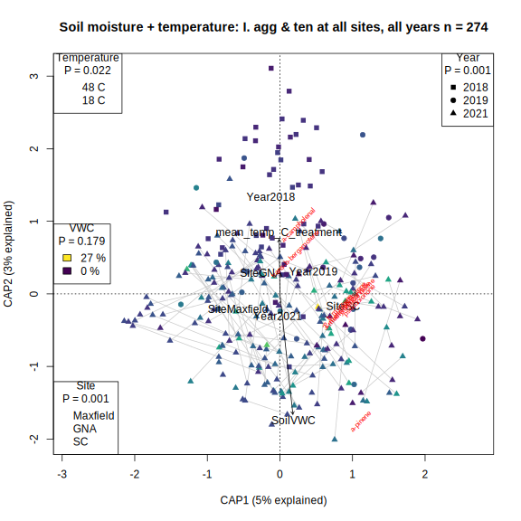
ggplot(svf.otc, aes(x=mean_temp_C_treatment, y=SoilVWC))+ geom_point() + geom_smooth()
Selection gradients
Following method of Chong et al.2018 for reconstructing selection estimates from estimates of selection on PCs: Beta = E * A.
minsamples <- 70
vol.top <- vol[,colSums(decostand(vol,"pa"))> minsamples]#occur in more than minsamples
sds <- read_csv("data/2021_Maxfield_sds.csv") %>%
mutate(prop_uninfested = 1 - prop_infested,
plant=as.character(plant))
fitnesstraits <- c("seeds_est", "seeds_per_flower", "prop_uninfested") #"eggs_per_flower"
fitnessnames <- set_names(c("Estimated total seeds", "Estimated seeds per flower", "Prop. nonaborted fruits uninfested"), fitnesstraits)
# Run PCA on traits
vols.PCA <- vol.top %>% mutate(across(everything(), ~ (.x-mean(.x, na.rm=T))/sd(.x, na.rm=T))) %>%
prcomp()
summary(vols.PCA) # PCs 1 - 5 explain 63% of the variation, #PCs total = top volatilesImportance of components:
PC1 PC2 PC3 PC4 PC5 PC6 PC7
Standard deviation 1.9830 1.3088 1.20628 1.13258 1.05065 0.96813 0.91968
Proportion of Variance 0.2621 0.1142 0.09701 0.08552 0.07359 0.06249 0.05639
Cumulative Proportion 0.2621 0.3763 0.47335 0.55886 0.63246 0.69494 0.75133
PC8 PC9 PC10 PC11 PC12 PC13 PC14
Standard deviation 0.87102 0.7823 0.75839 0.73102 0.66360 0.59450 0.52018
Proportion of Variance 0.05058 0.0408 0.03834 0.03563 0.02936 0.02356 0.01804
Cumulative Proportion 0.80191 0.8427 0.88105 0.91667 0.94603 0.96959 0.98763
PC15
Standard deviation 0.43071
Proportion of Variance 0.01237
Cumulative Proportion 1.00000vols.PCA.E <- vols.PCA$rotation[,1:5] #min(4, ncol(vols.PCA$rotation))
calculate_beta <- function(E, slopes) {
data.frame(B = E %*% slopes$A,
SE = sqrt(E ^ 2 %*% slopes$SE ^ 2)) %>%
mutate(not_zero = abs(B) - SE > 0) %>%
rownames_to_column("trait")
}
selection_pca <- function(temp=c("control","warmed"), fitnesstrait = "seeds_est") {
vols.std.PCA <- svf %>% bind_cols(as.data.frame(vols.PCA$x)) %>%
filter(temp %in% .env$temp) %>%
mutate(plant=as.character(plant)) %>%
left_join(sds, by=c("plotid", "plant","temp")) %>%
select(all_of(fitnesstrait), "temp", starts_with("PC")) %>%
rename("fitness" = fitnesstrait) %>%
mutate(relfitness = fitness/mean(fitness, na.rm=T), .keep="unused") %>% ungroup %>%
drop_na(relfitness) %>%
select(where(~sum(is.na(.))==0))
# Regress relative fitness on PCs
vols.PCA.regression <- lm(relfitness ~ PC1 + PC2 + PC3 + PC4 + PC5, data = vols.std.PCA)
vols.PCA.slopes <- tidy(vols.PCA.regression) %>% filter(term != "(Intercept)") %>% rename(A=estimate, SE=std.error)
# Convert selection gradients on PCs to gradients on traits
calculate_beta(vols.PCA.E, vols.PCA.slopes)
}
plot_beta <- function(betas) {
bs <- betas %>% left_join(ipochems, by=c("trait"="name")) %>%
mutate(trait = fct_reorder(trait, map_dbl(vol.top[,trait], mean)))#order graph by mean emissions
ggplot(bs, aes(y=trait, x = B, xmin=B-SE, xmax=B+SE)) +
geom_vline(xintercept=0)+
geom_pointrange(aes(color=temp), position=position_dodge(width=0.5)) +
labs(x = "Selection gradient (beta) estimated from PCs", y = "", color="Temperature") +
scale_color_manual(values=tempcol) + theme_minimal() + #+ scale_x_continuous(limits=c(-0.55,0.55), n.breaks=10) +
theme(legend.position="bottom")
}
vols.beta.temp <- expand_grid(temp=c("control","warmed"), fitnesstrait=fitnesstraits) %>%
mutate(betas = pmap(., selection_pca)) %>% unnest(betas)
walk(fitnesstraits, ~print(plot_beta(filter(vols.beta.temp, fitnesstrait==.x)) + ggtitle(fitnessnames[.x])))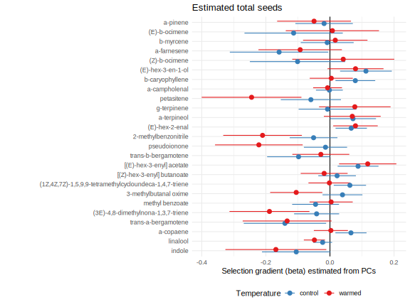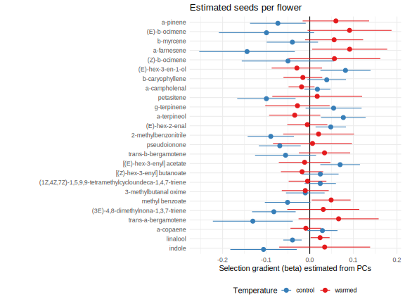
Percivals warm vs.cool
CAP analysis of each Percival dataset
#inventory of samples
svf %>% filter(expt=="perc") %>% count(PlantType, DN, Temp,Year) %>% kable(caption="Sample size")| PlantType | DN | Temp | Year | n |
|---|---|---|---|---|
| agg | day | cool | 2018 | 9 |
| agg | day | cool | 2019 | 5 |
| agg | day | warm | 2018 | 8 |
| agg | day | warm | 2019 | 6 |
| agg | night | cool | 2018 | 9 |
| agg | night | cool | 2019 | 4 |
| agg | night | warm | 2018 | 7 |
| agg | night | warm | 2019 | 5 |
| ten | day | cool | 2018 | 7 |
| ten | day | cool | 2019 | 5 |
| ten | day | warm | 2018 | 8 |
| ten | day | warm | 2019 | 4 |
| ten | night | cool | 2018 | 9 |
| ten | night | cool | 2019 | 5 |
| ten | night | warm | 2018 | 8 |
| ten | night | warm | 2019 | 5 |
plot.perc <- function(svf.perc, plot.chems=T) {
vol.perc <- vol[svf.perc$sample,]
cap.perc <- capscale(sqrt(vol.perc) ~ DN+Temp, distance="bray", data=svf.perc)
summ.cap <- summary(cap.perc)
prop.expl <- summ.cap$cont$importance[2,c("CAP1","CAP2")]
ax.labs <- paste0("CAP", 1:2, " (",round(100*prop.expl),"% explained)")
anova.cap <- anova(cap.perc, by="margin")
plot(cap.perc, type="n", xlim=range(cap.perc$CCA$wa[,1]), xlab=ax.labs[1], ylab=ax.labs[2])
with(svf.perc, title(paste0("Percivals: I. ", unique(PlantType)," in ", unique(Year), " n = ", nrow(svf.perc))))
#, " (",round(100*summ.cap$constr.chi / summ.cap$tot.chi),"% explained)")
legend("topleft", title=paste("Temperature","\nP =",anova.cap["Temp","Pr(>F)"]),
levels(svf.perc$Temp), fill=Tempcol)
legend("topright", title=paste("Time","\nP =",anova.cap["DN","Pr(>F)"]),
levels(svf.perc$DN), pch=c(1,19))
if(plot.chems) text(cap.perc, display="species", cex=0.7, srt=45,
col=ifelse(sqrt(cap.perc$CCA$v[,1]^2 + cap.perc$CCA$v[,2]^2)>0.25, alpha("purple",0.7),alpha("purple",0)))
ordispider(cap.perc, with(svf.perc, paste(Year, Temp, Sample2)), col="grey80")
points(cap.perc, display="sites", col=Tempcol[svf.perc$Temp], pch=c(1,19)[svf.perc$DN])
text(cap.perc, display="cn")
return(cap.perc)
}
cap.perc.agg18 <- plot.perc(svf %>% filter(expt=="perc",Year=="2018",PlantType=="agg"))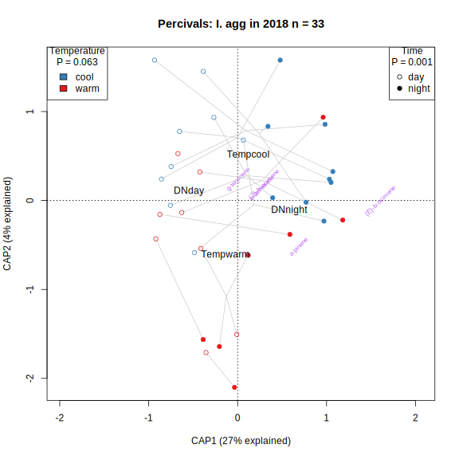
cap.perc.agg19 <- plot.perc(svf %>% filter(expt=="perc",Year=="2019",PlantType=="agg"))
cap.perc.ten18 <- plot.perc(svf %>% filter(expt=="perc",Year=="2018",PlantType=="ten"))
cap.perc.ten19 <- plot.perc(svf %>% filter(expt=="perc",Year=="2019",PlantType=="ten"))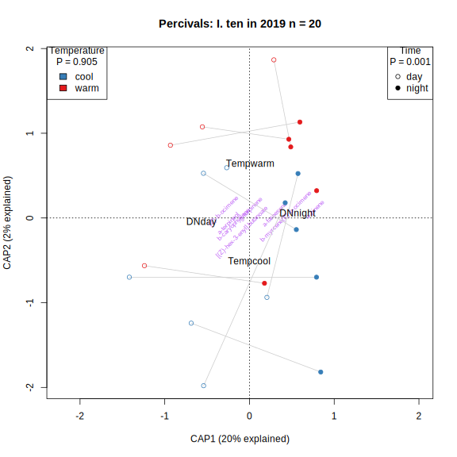
#cap.perc.all <- list(agg18=cap.perc.agg18, agg19=cap.perc.agg19, ten18=cap.perc.ten18, ten19=cap.perc.ten19)
#lapply(cap.perc.all, anova, by="margin")CAP of Percival dataset combined for each species
plot.perc.comb <- function(svf.perc, plot.chems=F) {
vol.perc <- vol[svf.perc$sample,]
cap.perc.comb <- capscale(sqrt(vol.perc) ~ Year+DN+Temp, distance="bray", data=svf.perc)
summ.cap <- summary(cap.perc.comb)
prop.expl <- summ.cap$cont$importance[2,c("CAP1","CAP2")]
ax.labs <- paste0("CAP", 1:2, " (",round(100*prop.expl),"% explained)")
anova.cap <- anova(cap.perc.comb, by="margin")
plot(cap.perc.comb, type="n", xlim=range(cap.perc.comb$CCA$wa[,1]), xlab=ax.labs[1], ylab=ax.labs[2])
title(paste("Percivals: I.",unique(svf.perc$PlantType), "2018/2019","n =", nrow(svf.perc)))
legend("bottomleft", title=paste("Temperature","\nP =",anova.cap["Temp","Pr(>F)"]), levels(svf.perc$Temp), fill=Tempcol)
legend("bottomright", title=paste("Time","\nP =",anova.cap["DN","Pr(>F)"]), levels(svf.perc$DN), fil=c(0,1))
legend("topright", title=paste("Year","\nP =",anova.cap["Year","Pr(>F)"]), levels(svf.perc$Year), pch=c(19,15))
ordispider(cap.perc.comb, with(svf.perc, paste(Year, Temp, Sample2)), col="grey80")
points(cap.perc.comb, display="sites", col=Tempcol[svf.perc$Temp], pch=c(1,0,19,15)[factor(paste(svf.perc$DN, svf.perc$Year))])
text(cap.perc.comb, display="cn")
text(cap.perc.comb, display="species", cex=0.7, srt=45, col=ifelse(sqrt(cap.perc.comb$CCA$v[,1]^2 + cap.perc.comb$CCA$v[,2]^2)>0.2, alpha("purple",1),alpha("purple",0)))
return(cap.perc.comb)
}
svf.perc.agg <- plot.perc.comb(svf %>% filter(expt=="perc", PlantType=="agg"))
svf.perc.ten <- plot.perc.comb(svf %>% filter(expt=="perc", PlantType=="ten"))
#svf.perc.both <- plot.perc.comb(svf %>% filter(expt=="perc"))Individual volatiles
Treatment effects
vols.plot <- chemsf %>% filter(filter_final, freq.floral>0.3) %>% pull("name") %>% as.character
#vols.plot[vols.plot=="b-caryophyllene"] <- "b-caryophyllene.1"#c("b-ocimene","a-pinene","a-farnesene","b-caryophyllene.1","petasitene","b-myrcene","longifolene","tridec-1-ene ","benzophenone")
vol.long <- gather(cbind(sample=rownames(vol[,vols.plot]), total=rowSums(vol), vol[,vols.plot]), key="chem",value="area", 2:(length(vols.plot)+2), factor_key=T)
vol.plot <- left_join(vol.long, svf)
specDNcols <- c( "#943390","#FF5056", "#A894FF","#FC8C97")
#Treatcols <- c("#DA9E18","#6B744F")
DNcols <- c("grey90","grey20")
ggplot(vol.plot %>% drop_na(PlantType, expt) %>% filter(expt=="otc", Site!="bb"),#TODO track down NAs
aes(x=paste(Site, Year),y=area, fill=DN, color=paste(Treat))) +
geom_boxplot(size=0.7, outlier.size=0.7, position=position_dodge2(preserve="total")) +
facet_wrap(vars(chem), scales="free") +
scale_y_sqrt("Emissions (ng/flower/hr)") +
scale_color_brewer("Treatment", palette = "Set1", direction=-1)+
scale_x_discrete("Site, year")+
scale_fill_manual("Time of day",values=DNcols) +
theme_minimal() + theme(axis.text.x=element_text(angle=20, vjust=0.5))
Actual temperature effects
ggplot(drop_na(vol.plot, PlantType, expt) %>% filter(expt=="otc", Site!="bb"),#TODO track down NAs
aes(x=mean_temp_C_treatment, y=area, shape=DN, color=paste(PlantType, Site, Year))) +
geom_point() + geom_smooth(se=F, method="lm")+
facet_wrap(vars(chem), scales="free_y") +
scale_y_sqrt("Emissions (ng/flower/hr)") +
scale_x_continuous("Mean temperature in controls or OTCs (\u00B0C)")+
scale_color_brewer("Species, site, year", palette = "Dark2", direction=-1)+#scale_color_manual("Species", values=spcols) +
scale_shape_manual("Time of day",values=c(1,19)) +
theme_minimal() + theme(axis.text.x=element_text(angle=20, vjust=0.5))
Soil moisture effects
ggplot(drop_na(vol.plot, PlantType, expt) %>% filter(expt=="otc", Site!="bb"),#TODO track down NAs
aes(x=SoilVWC, y=area, shape=DN, color=paste(PlantType, Site, Year))) +
geom_point() + geom_smooth(se=F, method="lm")+
facet_wrap(vars(chem), scales="free_y") +
scale_y_sqrt("Emissions (ng/flower/hr)") +
scale_x_continuous("Soil volumetric water content (%)")+
scale_color_brewer("Species, site, year", palette = "Dark2", direction=-1)+#scale_color_manual("Species", values=spcols) +
scale_shape_manual("Time of day",values=c(1,19)) +
theme_minimal() + theme(axis.text.x=element_text(angle=20, vjust=0.5))
Leaf volatiles
Inventory
Dropped 2 samples from 2018 without leaf mass. Volatiles units are ng per hour per gram dry leaf.
svl %>% count(PlantType, Treat, expt, Year) %>% kable(caption="Sample size")| PlantType | Treat | expt | Year | n |
|---|---|---|---|---|
| aggleaf | control | otc | 2019 | 8 |
| aggleaf | control | perc | 2019 | 4 |
| aggleaf | warmed | otc | 2019 | 10 |
| aggleaf | warmed | perc | 2019 | 4 |
| tenleaf | control | otc | 2019 | 9 |
| tenleaf | control | perc | 2019 | 3 |
| tenleaf | warmed | otc | 2019 | 9 |
| tenleaf | warmed | perc | 2019 | 2 |
sort(colSums(vol.leaf)/sum(colSums(vol.leaf)) ) undecanal 2,2,4,7-tetramethyloctane-3,5-dione
0.004682966 0.005735366
nonan-2-one hexan-1-ol
0.006579109 0.008933983
(E)-12-cyclopropyldodec-11-en-1-ol (Z)-hex-2-en-1-ol
0.009388218 0.011518029
[(Z)-hex-3-enyl] pentanoate pseudoionone
0.013308094 0.014021370
hex-2-enal 1-penten-3-ol
0.015621827 0.015685913
3,7-dimethyldecane 4-methylpentan-1-ol
0.015811380 0.018826771
petasitene b-caryophyllene
0.019925304 0.021561362
a-campholenal tridec-1-ene
0.022321232 0.026126936
(E)-tridec-2-enal (E)-4-oxohex-2-enal
0.028061874 0.028555519
5-butylnonane 4,6-dimethyldodecane
0.032276024 0.036435511
(E)-hex-2-enal [(E)-hex-3-enyl] acetate
0.101587668 0.158466414
(E)-hex-3-en-1-ol
0.384569131 Heatmap
#cairo_pdf("ipo_heatmap_leaf.pdf", width=12, height=12)
ph_leaf <- pheatmap(as.matrix(t(vol.leaf))^(1/3),
cluster_cols=T, show_colnames=F,
clustering_method="mcquitty", clustering_distance_rows="correlation",
clustering_distance_cols=vegdist(vol.leaf, method = "bray"),
clustering_callback = function(hc, ...){dendsort(hc, type="average")},
scale="none", color=inferno(512),
annotation_col = data.frame(svl %>% select("PlantType", "expt", "Treat"), row.names=rownames(vol.leaf)),
fontsize = 10, border_color = NA, legend=F, annotation_legend=T, cutree_rows=6
)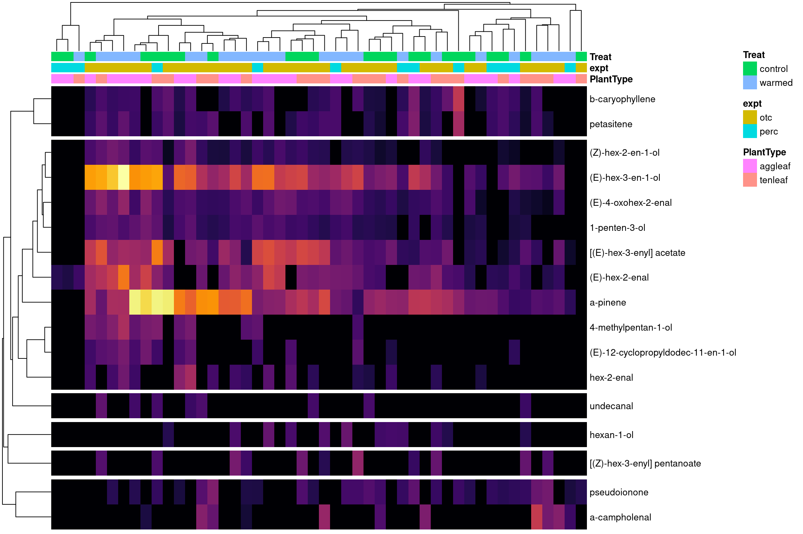
#dev.off()Leaf NMDS
set.seed(1)
nmds.vol_leaf <- metaMDS(sqrt(vol.leaf), dist="bray", autotransform = FALSE, trace=F)
TEY <- with(svl, factor(paste(PlantType,expt,Year)))
TEYcols <- brewer.pal(9, "Paired")#[c(1:4,8,5:6)]
spcols <- c(aggleaf="red", tenleaf="violet")
ordiplot(nmds.vol_leaf, type = "n")
legend("bottomleft", levels(TEY), fill=TEYcols, cex=0.9)
points(nmds.vol_leaf, display="sites", col=TEYcols[TEY], pch=19)
text(nmds.vol_leaf, display="species", cex=0.7, col="grey20")#points(nmds.vol_leaf, display="sites", col=viridis(100)[sqrt(rowSums(vol.leaf))/26], pch=19)CAP - OTCs
svl.otc <- svl %>% filter(expt=="otc")
cap.leaf <- capscale(sqrt(vol.leaf[svl$expt=="otc",]) ~ PlantType+temp, distance="bray", data=svl.otc)
summ.cap <- summary(cap.leaf)
prop.expl <- summ.cap$cont$importance[2,c("CAP1","CAP2")]
ax.labs <- paste0("CAP", 1:2, " (",round(100*prop.expl),"% explained)")
(anova.cap <- anova(cap.leaf, by="margin"))Permutation test for capscale under reduced model
Marginal effects of terms
Permutation: free
Number of permutations: 999
Model: capscale(formula = sqrt(vol.leaf[svl$expt == "otc", ]) ~ PlantType + temp, data = svl.otc, distance = "bray")
Df SumOfSqs F Pr(>F)
PlantType 1 0.7728 4.3525 0.001 ***
temp 1 0.1503 0.8466 0.549
Residual 33 5.8596
---
Signif. codes: 0 '***' 0.001 '**' 0.01 '*' 0.05 '.' 0.1 ' ' 1plot(cap.leaf, type="n", xlim=range(cap.leaf$CCA$wa[,1]), xlab=ax.labs[1], ylab=ax.labs[2])
title(paste("OTCs: I. agg and I. ten leaves 2019","n =", nrow(svl.otc)))
legend("bottomleft", title=paste("Treatment","\nP =",anova.cap["temp","Pr(>F)"]), levels(svl.otc$temp), fill=tempcol)
legend("bottomright", title=paste("Species","\nP =",anova.cap["PlantType","Pr(>F)"]), levels(svl.otc$PlantType), pch=c(19,15))
points(cap.leaf, display="sites", col=tempcol[svl.otc$temp], pch=c(19,15)[svl.otc$PlantType])
text(cap.leaf, display="cn")
text(cap.leaf, display="species", cex=0.7, col=ifelse(sqrt(cap.leaf$CCA$v[,1]^2 + cap.leaf$CCA$v[,2]^2)>0.2, alpha("purple",1),alpha("purple",0)))
CAP - Percivals
svl.perc <- svl %>% filter(expt=="perc")
cap.leaf.perc <- capscale(sqrt(vol.leaf[svl$expt=="perc",]) ~ PlantType+Temp, distance="bray", data=svl.perc)
summ.cap <- summary(cap.leaf.perc)
prop.expl <- summ.cap$cont$importance[2,c("CAP1","CAP2")]
ax.labs <- paste0("CAP", 1:2, " (",round(100*prop.expl),"% explained)")
(anova.cap <- anova(cap.leaf.perc, by="margin"))Permutation test for capscale under reduced model
Marginal effects of terms
Permutation: free
Number of permutations: 999
Model: capscale(formula = sqrt(vol.leaf[svl$expt == "perc", ]) ~ PlantType + Temp, data = svl.perc, distance = "bray")
Df SumOfSqs F Pr(>F)
PlantType 1 0.12569 0.3977 0.900
Temp 1 0.26128 0.8266 0.504
Residual 10 3.16082